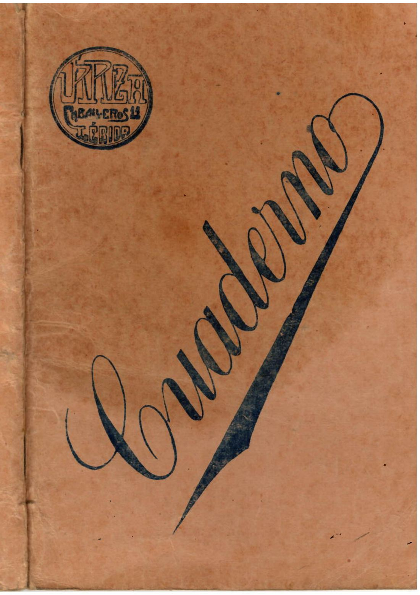
El quadern de la Concepció Vilella Gil
Biografia familiar escrita a Lleida per a les filles (1853–1924)Biografía familiar escrita en Lleida para las hijas (1853–1924)A family biography written in Lleida for her daughters (1853–1924)Семейна биография, писана в Лерида за дъщерите (1853–1924)
Quadern manuscrit. Lleida, 4 de març de 1924.Cuaderno manuscrito. Lleida, 4 de marzo de 1924.Handwritten notebook. Lleida, 4 March 1924.Ръкописна тетрадка. Лерида, 4 март 1924.
Comença la lectura →Empieza la lectura →Start reading →Започни четенето →
El quadernEl cuadernoThe notebookТетрадката
46 de 46 caresUna cara per pàgina. El resum segueix l’idioma del menú; el fidel i la corregida es queden en castellà, la llengua del paper.Una cara por página. El resumen sigue el idioma del menú; la fiel y la corregida quedan en castellano, la lengua del papel.One leaf per page. The summary follows the menu language; the faithful and corrected texts stay in Spanish, the language of the paper.По една страница. Резюмето следва езика на менюто; вярната и коригираната транскрипция остават на испански, езикът на ръкописа.
Filtra per capítol:Filtra por capítulo:Filter by chapter:Филтър по глава:
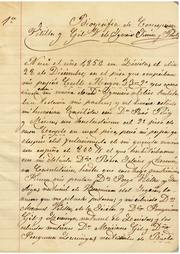
Full 2 · dretaHoja 2 · derechaSheet 2 · rightЛист 2 · дяснаComença la biografia: naixement a Lleida i llinatge dels Vilella-Gil.Empieza la biografía: nacimiento en Lleida y linaje de los Vilella-Gil.The biography opens: birth in Lleida and the Vilella-Gil line.Биографията започва: раждане в Лерида и родът Вилеля-Гил.Infància i orfenesaInfancia y orfandadChildhood and orphanhoodДетство и сирачество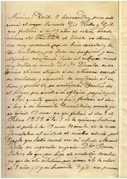
Full 3 · esquerraHoja 3 · izquierdaSheet 3 · leftЛист 3 · ляваMort de la mare (1858), Escolàpies i orfenesa sota l’àvia.Muerte de la madre (1858), Escolapias y orfandad bajo la abuela.Death of her mother (1858), the Escolàpies school, and orphanhood under her grandmother.Смърт на майката (1858), Есколапиите и сирачество при бабата.Infància i orfenesaInfancia y orfandadChildhood and orphanhoodДетство и сирачество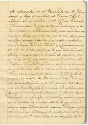
Full 3 · dretaHoja 3 · derechaSheet 3 · rightЛист 3 · дяснаMort de la mare (1858), Escolàpies i orfenesa sota l’àvia.Muerte de la madre (1858), Escolapias y orfandad bajo la abuela.Death of her mother (1858), the Escolàpies school, and orphanhood under her grandmother.Смърт на майката (1858), Есколапиите и сирачество при бабата.Infància i orfenesaInfancia y orfandadChildhood and orphanhoodДетство и сирачество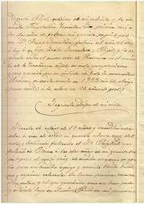
Full 4 · esquerraHoja 4 · izquierdaSheet 4 · leftЛист 4 · ляваCompanyes de joventut i, el 1872, coneix Ignacio Simón y Ponti.Compañeras de juventud y, en 1872, conoce a Ignacio Simón y Ponti.Friends of her youth and, in 1872, she meets Ignacio Simón y Ponti.Другарки от младостта и през 1872 среща Игнасио Симон и Понти.Infància i orfenesaInfancia y orfandadChildhood and orphanhoodДетство и сирачество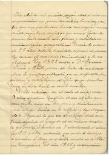
Full 4 · dretaHoja 4 · derechaSheet 4 · rightЛист 4 · дяснаCompanyes de joventut i, el 1872, coneix Ignacio Simón y Ponti.Compañeras de juventud y, en 1872, conoce a Ignacio Simón y Ponti.Friends of her youth and, in 1872, she meets Ignacio Simón y Ponti.Другарки от младостта и през 1872 среща Игнасио Симон и Понти.Infància i orfenesaInfancia y orfandadChildhood and orphanhoodДетство и сирачество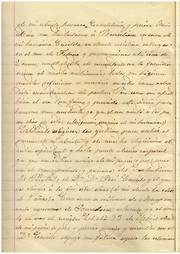
Full 5 · esquerraHoja 5 · izquierdaSheet 5 · leftЛист 5 · ляваConsulta familiar a Barcelona, relacions formals i esposalles; vacances a Vilanova del Segrià.Consulta familiar en Barcelona, relaciones formales y esponsales; vacaciones en Vilanova del Segrià.Family counsel in Barcelona, a formal courtship and betrothal; holidays in Vilanova del Segrià.Семеен съвет в Барселона, официални отношения и годеж; почивка във Виланова дел Сегрия.NocesNupciasMarriageБрак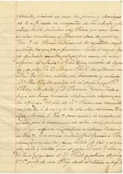
Full 5 · dretaHoja 5 · derechaSheet 5 · rightЛист 5 · дяснаConsulta familiar a Barcelona, relacions formals i esposalles; vacances a Vilanova del Segrià.Consulta familiar en Barcelona, relaciones formales y esponsales; vacaciones en Vilanova del Segrià.Family counsel in Barcelona, a formal courtship and betrothal; holidays in Vilanova del Segrià.Семеен съвет в Барселона, официални отношения и годеж; почивка във Виланова дел Сегрия.NocesNupciasMarriageБрак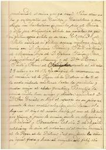
Full 6 · esquerraHoja 6 · izquierdaSheet 6 · leftЛист 6 · ляваCasament (31 de juliol), velacions i naixement de les dues primeres filles.Boda (31 de julio), velaciones y nacimiento de las dos primeras hijas.Wedding (31 July), nuptial blessings, and the birth of the first two daughters.Сватба (31 юли), венчавка и раждане на първите две дъщери.NocesNupciasMarriageБрак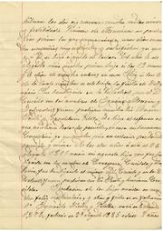
Full 6 · dretaHoja 6 · derechaSheet 6 · rightЛист 6 · дяснаCasament (31 de juliol), velacions i naixement de les dues primeres filles.Boda (31 de julio), velaciones y nacimiento de las dos primeras hijas.Wedding (31 July), nuptial blessings, and the birth of the first two daughters.Сватба (31 юли), венчавка и раждане на първите две дъщери.NocesNupciasMarriageБрак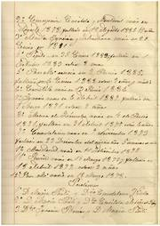
Full 7 · esquerraHoja 7 · izquierdaSheet 7 · leftЛист 7 · ляваLlista dels 12 fills, padrins, i mort del tío Magín Pontí (1884).Lista de los 12 hijos, padrinos, y muerte del tío Magín Pontí (1884).List of the twelve children, godparents, and the death of uncle Magín Pontí (1884).Списък на 12-те деца, кръстници и смъртта на чичо Магин Понти (1884).Fills i Magí PontíHijos y Magí PontíChildren and Magí PontíДеца и Маги Понти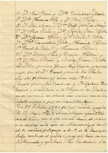
Full 7 · dretaHoja 7 · derechaSheet 7 · rightЛист 7 · дяснаLlista dels 12 fills, padrins, i mort del tío Magín Pontí (1884).Lista de los 12 hijos, padrinos, y muerte del tío Magín Pontí (1884).List of the twelve children, godparents, and the death of uncle Magín Pontí (1884).Списък на 12-те деца, кръстници и смъртта на чичо Магин Понти (1884).Fills i Magí PontíHijos y Magí PontíChildren and Magí PontíДеца и Маги Понти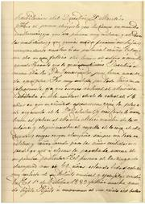
Full 8 · esquerraHoja 8 · izquierdaSheet 8 · leftЛист 8 · ляваElogi de Magín Pontí organista; mort de Pepita; Vilanova del Segrià, Lourdes i mort del cunyat.Elogio de Magín Pontí organista; muerte de Pepita; Vilanova del Segrià, Lourdes y muerte del cuñado.Praise of Magín Pontí the organist; Pepita’s death; Vilanova del Segrià, Lourdes, and the death of a brother-in-law.Похвала за органиста Магин Понти; смъртта на Пепита; Виланова дел Сегрия, Лурд и смъртта на зетя.Fills i Magí PontíHijos y Magí PontíChildren and Magí PontíДеца и Маги Понти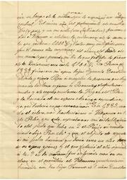
Full 8 · dretaHoja 8 · derechaSheet 8 · rightЛист 8 · дяснаElogi de Magín Pontí organista; mort de Pepita; Vilanova del Segrià, Lourdes i mort del cunyat.Elogio de Magín Pontí organista; muerte de Pepita; Vilanova del Segrià, Lourdes y muerte del cuñado.Praise of Magín Pontí the organist; Pepita’s death; Vilanova del Segrià, Lourdes, and the death of a brother-in-law.Похвала за органиста Магин Понти; смъртта на Пепита; Виланова дел Сегрия, Лурд и смъртта на зетя.Fills i Magí PontíHijos y Magí PontíChildren and Magí PontíДеца и Маги Понти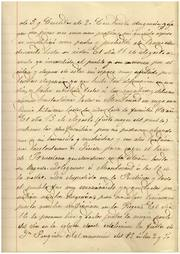
Full 9 · esquerraHoja 9 · izquierdaSheet 9 · leftЛист 9 · ляваEl còlera al poble; fuga a Montserrat; mort de Conchita i malaltia greu de l’autora.El cólera en el pueblo; huida a Montserrat; muerte de Conchita y enfermedad grave de la autora.Cholera in the town; flight to Montserrat; Conchita’s death and the author’s grave illness.Холера в селището; бягство в Монсерат; смъртта на Кончита и тежка болест на авторката.Còlera a MontserratCólera en MontserratCholera at MontserratХолера в Монсерат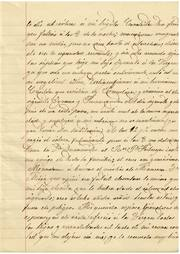
Full 9 · dretaHoja 9 · derechaSheet 9 · rightЛист 9 · дяснаEl còlera al poble; fuga a Montserrat; mort de Conchita i malaltia greu de l’autora.El cólera en el pueblo; huida a Montserrat; muerte de Conchita y enfermedad grave de la autora.Cholera in the town; flight to Montserrat; Conchita’s death and the author’s grave illness.Холера в селището; бягство в Монсерат; смъртта на Кончита и тежка болест на авторката.Còlera a MontserratCólera en MontserratCholera at MontserratХолера в Монсерат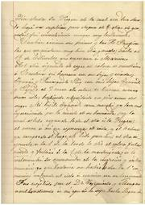
Full 10 · esquerraHoja 10 · izquierdaSheet 10 · leftЛист 10 · ляваConvalescència; mort del fill Ignacio de còlera; enterraments i mort de Beatriz.Convalecencia; muerte del hijo Ignacio de cólera; entierros y muerte de Beatriz.Convalescence; son Ignacio dies of cholera; burials and the death of Beatriz.Оздравяване; синът Игнасио умира от холера; погребения и смъртта на Беатрис.Còlera a MontserratCólera en MontserratCholera at MontserratХолера в Монсерат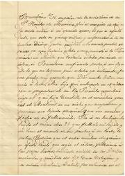
Full 10 · dretaHoja 10 · derechaSheet 10 · rightЛист 10 · дяснаConvalescència; mort del fill Ignacio de còlera; enterraments i mort de Beatriz.Convalecencia; muerte del hijo Ignacio de cólera; entierros y muerte de Beatriz.Convalescence; son Ignacio dies of cholera; burials and the death of Beatriz.Оздравяване; синът Игнасио умира от холера; погребения и смъртта на Беатрис.Còlera a MontserratCólera en MontserratCholera at MontserratХолера в Монсерат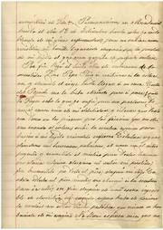
Full 11 · esquerraHoja 11 · izquierdaSheet 11 · leftЛист 11 · ляваLi diuen que els dos fills són al cel; tornada a Lleida; Federico (1888) i mudances.Le dicen que los dos hijos están en el cielo; vuelta a Lleida; Federico (1888) y mudanzas.They tell her the two children are in heaven; return to Lleida; Federico (1888) and house-moves.Казват ѝ, че двете деца са на небето; връщане в Лерида; Федерико (1888) и премествания.Còlera a MontserratCólera en MontserratCholera at MontserratХолера в Монсерат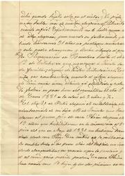
Full 11 · dretaHoja 11 · derechaSheet 11 · rightЛист 11 · дяснаLi diuen que els dos fills són al cel; tornada a Lleida; Federico (1888) i mudances.Le dicen que los dos hijos están en el cielo; vuelta a Lleida; Federico (1888) y mudanzas.They tell her the two children are in heaven; return to Lleida; Federico (1888) and house-moves.Казват ѝ, че двете деца са на небето; връщане в Лерида; Федерико (1888) и премествания.Còlera a MontserratCólera en MontserratCholera at MontserratХолера в Монсерат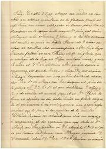
Full 12 · esquerraHoja 12 · izquierdaSheet 12 · leftЛист 12 · ляваMés pisos a Lleida; morts de Javier i Lourdes; malaltia de l’espòs i Conchita a la capçalera.Más pisos en Lleida; muertes de Javier y Lourdes; enfermedad del esposo y Conchita a la cabecera.More flats in Lleida; the deaths of Javier and Lourdes; the husband’s illness and Conchita at the bedside.Още жилища в Лерида; смъртта на Хавиер и Лурдес; болестта на съпруга и Кончита при леглото.Cases, malaltia, PaülsCasas, enfermedad, paúlesHouses, illness, VincentiansКъщи, болест, паулисти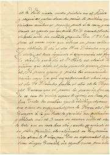
Full 12 · dretaHoja 12 · derechaSheet 12 · rightЛист 12 · дяснаMés pisos a Lleida; morts de Javier i Lourdes; malaltia de l’espòs i Conchita a la capçalera.Más pisos en Lleida; muertes de Javier y Lourdes; enfermedad del esposo y Conchita a la cabecera.More flats in Lleida; the deaths of Javier and Lourdes; the husband’s illness and Conchita at the bedside.Още жилища в Лерида; смъртта на Хавиер и Лурдес; болестта на съпруга и Кончита при леглото.Cases, malaltia, PaülsCasas, enfermedad, paúlesHouses, illness, VincentiansКъщи, болест, паулисти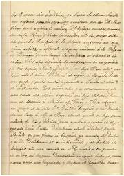
Full 13 · esquerraHoja 13 · izquierdaSheet 13 · leftЛист 13 · ляваVot a Lourdes, peu operat a Molins de Rei, i peregrinació a Roma (Pius IX, 1876).Voto a Lourdes, pie operado en Molins de Rei, y peregrinación a Roma (Pío IX, 1876).A vow to Lourdes, a foot operated on at Molins de Rei, and a pilgrimage to Rome (Pius IX, 1876).Обет към Лурд, операция на крак в Молинс де Рей и поклонение в Рим (Пий IX, 1876).Cases, malaltia, PaülsCasas, enfermedad, paúlesHouses, illness, VincentiansКъщи, болест, паулисти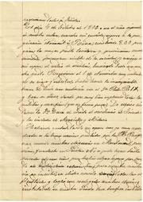
Full 13 · dretaHoja 13 · derechaSheet 13 · rightЛист 13 · дяснаVot a Lourdes, peu operat a Molins de Rei, i peregrinació a Roma (Pius IX, 1876).Voto a Lourdes, pie operado en Molins de Rei, y peregrinación a Roma (Pío IX, 1876).A vow to Lourdes, a foot operated on at Molins de Rei, and a pilgrimage to Rome (Pius IX, 1876).Обет към Лурд, операция на крак в Молинс де Рей и поклонение в Рим (Пий IX, 1876).Cases, malaltia, PaülsCasas, enfermedad, paúlesHouses, illness, VincentiansКъщи, болест, паулисти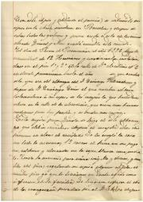
Full 14 · esquerraHoja 14 · izquierdaSheet 14 · leftЛист 14 · ляваArribada de 12 germanes (1876), primera missa a Tortosa (1912) i casament de Camilo.Llegada de 12 hermanas (1876), primera misa en Tortosa (1912) y boda de Camilo.Arrival of twelve sisters (1876), a first mass in Tortosa (1912) and Camilo’s wedding.Пристигане на 12 сестри (1876), първа литургия в Тортоса (1912) и сватбата на Камило.Cases, malaltia, PaülsCasas, enfermedad, paúlesHouses, illness, VincentiansКъщи, болест, паулисти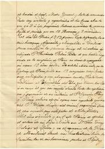
Full 14 · dretaHoja 14 · derechaSheet 14 · rightЛист 14 · дяснаArribada de 12 germanes (1876), primera missa a Tortosa (1912) i casament de Camilo.Llegada de 12 hermanas (1876), primera misa en Tortosa (1912) y boda de Camilo.Arrival of twelve sisters (1876), a first mass in Tortosa (1912) and Camilo’s wedding.Пристигане на 12 сестри (1876), първа литургия в Тортоса (1912) и сватбата на Камило.Cases, malaltia, PaülsCasas, enfermedad, paúlesHouses, illness, VincentiansКъщи, болест, паулисти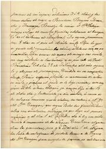
Full 15 · esquerraHoja 15 · izquierdaSheet 15 · leftЛист 15 · ляваViatge de nuvis de Camilo; part greu de Conchita; comença el «tercer relat» (malaltia de 1916).Viaje de novios de Camilo; parto grave de Conchita; empieza el «tercer relato» (enfermedad de 1916).Camilo’s wedding journey; Conchita’s dangerous labour; the «third account» begins (illness of 1916).Сватбено пътуване на Камило; тежко раждане на Кончита; започва «третият разказ» (болестта от 1916).Cases, malaltia, PaülsCasas, enfermedad, paúlesHouses, illness, VincentiansКъщи, болест, паулисти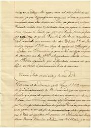
Full 15 · dretaHoja 15 · derechaSheet 15 · rightЛист 15 · дяснаViatge de nuvis de Camilo; part greu de Conchita; comença el «tercer relat» (malaltia de 1916).Viaje de novios de Camilo; parto grave de Conchita; empieza el «tercer relato» (enfermedad de 1916).Camilo’s wedding journey; Conchita’s dangerous labour; the «third account» begins (illness of 1916).Сватбено пътуване на Камило; тежко раждане на Кончита; започва «третият разказ» (болестта от 1916).Cases, malaltia, PaülsCasas, enfermedad, paúlesHouses, illness, VincentiansКъщи, болест, паулисти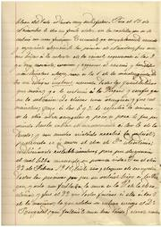
Full 16 · esquerraHoja 16 · izquierdaSheet 16 · leftЛист 16 · ляваAtacs cerebrals i, el 22 de febrer de 1917, mort d’Ignacio.Ataques cerebrales y, el 22 de febrero de 1917, muerte de Ignacio.Strokes and, on 22 February 1917, the death of Ignacio.Мозъчни пристъпи и на 22 февруари 1917 смъртта на Игнасио.Mort d’IgnacioMuerte de IgnacioDeath of IgnacioСмъртта на Игнасио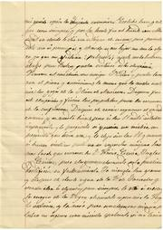
Full 16 · dretaHoja 16 · derechaSheet 16 · rightЛист 16 · дяснаAtacs cerebrals i, el 22 de febrer de 1917, mort d’Ignacio.Ataques cerebrales y, el 22 de febrero de 1917, muerte de Ignacio.Strokes and, on 22 February 1917, the death of Ignacio.Мозъчни пристъпи и на 22 февруари 1917 смъртта на Игнасио.Mort d’IgnacioMuerte de IgnacioDeath of IgnacioСмъртта на Игнасио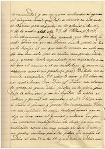
Full 17 · esquerraHoja 17 · izquierdaSheet 17 · leftЛист 17 · ляваEnterro (24 de febrer de 1917), dol de Lleida i sufragis.Entierro (24 de febrero de 1917), duelo de Lleida y sufragios.Funeral (24 February 1917), Lleida in mourning, and masses for the dead.Погребение (24 февруари 1917), траур в Лерида и заупокойни служби.Mort d’IgnacioMuerte de IgnacioDeath of IgnacioСмъртта на Игнасио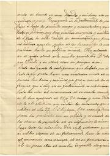
Full 17 · dretaHoja 17 · derechaSheet 17 · rightЛист 17 · дяснаEnterro (24 de febrer de 1917), dol de Lleida i sufragis.Entierro (24 de febrero de 1917), duelo de Lleida y sufragios.Funeral (24 February 1917), Lleida in mourning, and masses for the dead.Погребение (24 февруари 1917), траур в Лерида и заупокойни служби.Mort d’IgnacioMuerte de IgnacioDeath of IgnacioСмъртта на Игнасио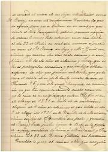
Full 18 · esquerraHoja 18 · izquierdaSheet 18 · leftЛист 18 · ляваCasament de Montserrat (1921), mort de Cecilio i quinta del fill (Annual / Melilla).Boda de Montserrat (1921), muerte de Cecilio y quinta del hijo (Annual / Melilla).Montserrat’s wedding (1921), Cecilio’s death and the son’s draft (Annual / Melilla).Сватбата на Монсерат (1921), смъртта на Сесилио и наборът на сина (Ануал / Мелиля).Viduïtat, MelillaViudez, MelillaWidowhood, MelillaВдовство, Мелиля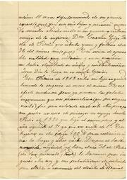
Full 18 · dretaHoja 18 · derechaSheet 18 · rightЛист 18 · дяснаCasament de Montserrat (1921), mort de Cecilio i quinta del fill (Annual / Melilla).Boda de Montserrat (1921), muerte de Cecilio y quinta del hijo (Annual / Melilla).Montserrat’s wedding (1921), Cecilio’s death and the son’s draft (Annual / Melilla).Сватбата на Монсерат (1921), смъртта на Сесилио и наборът на сина (Ануал / Мелиля).Viduïtat, MelillaViudez, MelillaWidowhood, MelillaВдовство, Мелиля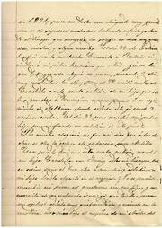
Full 19 · esquerraHoja 19 · izquierdaSheet 19 · leftЛист 19 · ляваEl fill marxa a Melilla; data falsa al registre (9 de juny vs 18 de maig).El hijo marcha a Melilla; fecha falsa en el registro (9 de junio vs 18 de mayo).The son leaves for Melilla; a false date in the register (9 June vs 18 May).Синът заминава за Мелиля; фалшива дата в регистъра (9 юни срещу 18 май).Viduïtat, MelillaViudez, MelillaWidowhood, MelillaВдовство, Мелиля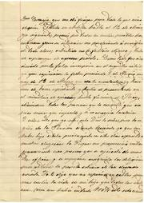
Full 19 · dretaHoja 19 · derechaSheet 19 · rightЛист 19 · дяснаEl fill marxa a Melilla; data falsa al registre (9 de juny vs 18 de maig).El hijo marcha a Melilla; fecha falsa en el registro (9 de junio vs 18 de mayo).The son leaves for Melilla; a false date in the register (9 June vs 18 May).Синът заминава за Мелиля; фалшива дата в регистъра (9 юни срещу 18 май).Viduïtat, MelillaViudez, MelillaWidowhood, MelillaВдовство, Мелиля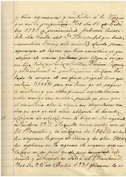
Full 20 · esquerraHoja 20 · izquierdaSheet 20 · leftЛист 20 · ляваCompra d’un pis, venda de Fernando 45, dots i tornada de Melilla (telegrama).Compra de un piso, venta de Fernando 45, dotes y vuelta de Melilla (telegrama).A flat is bought, Fernando 45 is sold, dowries, and the return from Melilla (a telegram).Покупка на жилище, продажба на Фернандо 45, зестри и връщане от Мелиля (телеграма).Viduïtat, MelillaViudez, MelillaWidowhood, MelillaВдовство, Мелиля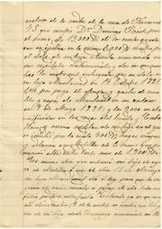
Full 20 · dretaHoja 20 · derechaSheet 20 · rightЛист 20 · дяснаCompra d’un pis, venda de Fernando 45, dots i tornada de Melilla (telegrama).Compra de un piso, venta de Fernando 45, dotes y vuelta de Melilla (telegrama).A flat is bought, Fernando 45 is sold, dowries, and the return from Melilla (a telegram).Покупка на жилище, продажба на Фернандо 45, зестри и връщане от Мелиля (телеграма).Viduïtat, MelillaViudez, MelillaWidowhood, MelillaВдовство, Мелиля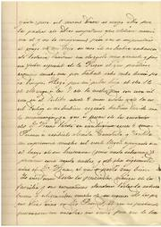
Full 21 · esquerraHoja 21 · izquierdaSheet 21 · leftЛист 21 · ляваArribada del fill (12 de maig), llicència absoluta i convalescència a Mataró.Llegada del hijo (12 de mayo), licencia absoluta y convalecencia en Mataró.The son’s arrival (12 May), full discharge and convalescence in Mataró.Пристигане на сина (12 май), пълно уволнение и оздравяване в Матаро.Viduïtat, MelillaViudez, MelillaWidowhood, MelillaВдовство, Мелиля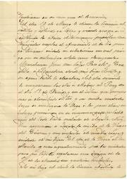
Full 21 · dretaHoja 21 · derechaSheet 21 · rightЛист 21 · дяснаArribada del fill (12 de maig), llicència absoluta i convalescència a Mataró.Llegada del hijo (12 de mayo), licencia absoluta y convalecencia en Mataró.The son’s arrival (12 May), full discharge and convalescence in Mataró.Пристигане на сина (12 май), пълно уволнение и оздравяване в Матаро.Viduïtat, MelillaViudez, MelillaWidowhood, MelillaВдовство, Мелиля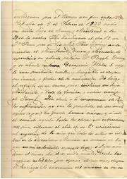
Full 22 · esquerraHoja 22 · izquierdaSheet 22 · leftЛист 22 · ляваNaix la neta (1923); al 3r aniversari de l’espòs, malaltia de Concepció, Conchita i el fill.Nace la nieta (1923); en el 3.er aniversario del esposo, enfermedad de Concepción, Conchita y el hijo.A granddaughter is born (1923); on the third anniversary of her husband’s death, Concepción, Conchita and the son fall ill.Ражда се внучката (1923); на 3-годишнината от смъртта на съпруга заболяват Консепсио, Кончита и синът.1923–19241923–19241923–19241923–1924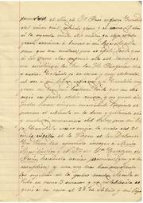
Full 22 · dretaHoja 22 · derechaSheet 22 · rightЛист 22 · дяснаNaix la neta (1923); al 3r aniversari de l’espòs, malaltia de Concepció, Conchita i el fill.Nace la nieta (1923); en el 3.er aniversario del esposo, enfermedad de Concepción, Conchita y el hijo.A granddaughter is born (1923); on the third anniversary of her husband’s death, Concepción, Conchita and the son fall ill.Ражда се внучката (1923); на 3-годишнината от смъртта на съпруга заболяват Консепсио, Кончита и синът.1923–19241923–19241923–19241923–1924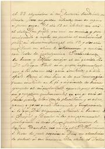
Full 23 · esquerraHoja 23 · izquierdaSheet 23 · leftЛист 23 · ляваExtremaunció a l’abril i lenta recuperació fins a seure a taula al desembre.Extremaunción en abril y lenta recuperación hasta sentarse a la mesa en diciembre.The last rites in April and a slow recovery until she sits at table in December.Последно причастие през април и бавно оздравяване до сядане на масата през декември.1923–19241923–19241923–19241923–1924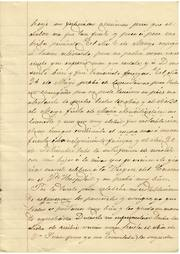
Full 23 · dretaHoja 23 · derechaSheet 23 · rightЛист 23 · дяснаExtremaunció a l’abril i lenta recuperació fins a seure a taula al desembre.Extremaunción en abril y lenta recuperación hasta sentarse a la mesa en diciembre.The last rites in April and a slow recovery until she sits at table in December.Последно причастие през април и бавно оздравяване до сядане на масата през декември.1923–19241923–19241923–19241923–1924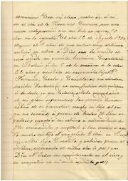
Full 24 · esquerraHoja 24 · izquierdaSheet 24 · leftЛист 24 · ляваMort de la germana (i d’un fill) el 16 d’agost de 1923; comptes i consell a les filles.Muerte de la hermana (y de un hijo) el 16 de agosto de 1923; cuentas y consejo a las hijas.Death of her sister (and of a son) on 16 August 1923; accounts and counsel to the daughters.Смърт на сестрата (и на един син) на 16 август 1923; сметки и съвет към дъщерите.1923–19241923–19241923–19241923–1924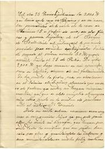
Full 24 · dretaHoja 24 · derechaSheet 24 · rightЛист 24 · дяснаMort de la germana (i d’un fill) el 16 d’agost de 1923; comptes i consell a les filles.Muerte de la hermana (y de un hijo) el 16 de agosto de 1923; cuentas y consejo a las hijas.Death of her sister (and of a son) on 16 August 1923; accounts and counsel to the daughters.Смърт на сестрата (и на един син) на 16 август 1923; сметки и съвет към дъщерите.1923–19241923–19241923–19241923–1924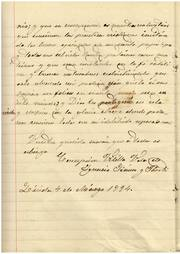
Full 25 · esquerraHoja 25 · izquierdaSheet 25 · leftЛист 25 · ляваTancament de la biografia: fe, abraçada de la mare, firma i data (Lleida, 4 de març de 1924).Cierre de la biografía: fe, abrazo de la madre, firma y fecha (Lleida, 4 de marzo de 1924).Close of the biography: faith, a mother’s embrace, signature and date (Lleida, 4 March 1924).Край на биографията: вяра, прегръдка на майката, подпис и дата (Лерида, 4 март 1924).1923–19241923–19241923–19241923–1924Sobre aquest recull
Aquest llibre reuneix el quadern manuscrit que Concepció Vilella y Gil, vídua d’Ignacio Simón y Ponti, va escriure en castellà per a les filles i va tancar a Lleida el 4 de març de 1924. Ella el titula Biografía. El suport és un Cuaderno de la papereria Urrea, Carrer dels Cavallers 14, Lleida.
El text comença al full 2, cara dreta. Les tapes del llibre nostre són un escaneig més nítid de la tapa impresa (`31.pdf`). El relat s’acaba al full 25, cara esquerra, amb la firma.
La transcripció, la correcció i els resums s’han fet a partir dels escanejos, amb ajuda d’intel·ligència artificial, i s’han revisat. En un manuscrit de més de cent anys, amb talls de fulla i tinta desigual, hi pot haver errors de lectura. Els mots dubtosos van amb claudàtors `[?]`. Quan el paper es contradiu (dates, llista de fills), es deixa visible.
Us demanem que no sigueu massa severs amb les errades. Si en detecteu alguna —una lectura, un nom, una data—, feu-ho saber a Josep Lluís Puyalto Granada (puyalto@coac.net) i la corregirem. Aquest recull és una feina viva.
Aquest llibre forma part d’un projecte més ampli: transcriure i documentar els papers de la família Rosell Simon. El quadern de la Concepció n’és una peça. Amb el temps, el desig és tenir-los tots llegits i posats en ordre.
A la memòria de Concepció Vilella y Gil i d’Ignacio Simón y Ponti.
I a les generacions de la família Simon, perquè no s’apagui la veu que ella va voler deixar només a les filles, i que ara es torna a llegir.
Sobre esta recopilación
Este libro reúne el cuaderno manuscrito que Concepció Vilella y Gil, viuda de Ignacio Simón y Ponti, escribió en castellano para las hijas y cerró en Lleida el 4 de marzo de 1924. Ella lo titula Biografía. El soporte es un Cuaderno de la papelería Urrea, Carrer dels Cavallers 14, Lleida.
El texto empieza en la hoja 2, cara derecha. Las tapas de nuestro libro son un escaneo más nítido de la tapa impresa (`31.pdf`). El relato acaba en la hoja 25, cara izquierda, con la firma.
La transcripción, la corrección y los resúmenes se han hecho a partir de los escaneos, con ayuda de inteligencia artificial, y se han revisado. En un manuscrito de más de cien años, con cortes de hoja y tinta desigual, puede haber errores de lectura. Las palabras dudosas van entre corchetes `[?]`. Cuando el papel se contradice (fechas, lista de hijos), se deja visible.
Os pedimos que no seáis demasiado severos con las erratas. Si detectáis alguna —una lectura, un nombre, una fecha—, hacedlo saber a Josep Lluís Puyalto Granada (puyalto@coac.net) y la corregiremos. Esta recopilación es un trabajo vivo.
Este libro forma parte de un proyecto más amplio: transcribir y documentar los papeles de la familia Rosell Simon. El cuaderno de la Concepció es una pieza. Con el tiempo, el deseo es tenerlos todos leídos y puestos en orden.
A la memoria de Concepció Vilella y Gil y de Ignacio Simón y Ponti.
Y a las generaciones de la familia Simon, para que no se apague la voz que ella quiso dejar solo a las hijas, y que ahora se vuelve a leer.
About this book
This book gathers the handwritten notebook that Concepció Vilella y Gil, widow of Ignacio Simón y Ponti, wrote in Spanish for her daughters and closed in Lleida on 4 March 1924. She titles it Biografía. The support is a Cuaderno from the Urrea stationer’s, Carrer dels Cavallers 14, Lleida.
The text begins on sheet 2, right-hand leaf. The covers of our book are a sharper scan of the printed cover (`31.pdf`). The account ends on sheet 25, left-hand leaf, with the signature.
The transcription, the corrected reading and the summaries were made from the scans, with the help of artificial intelligence, and then checked. In a manuscript more than a hundred years old, with torn leaves and uneven ink, there may be errors of reading. Doubtful words are marked `[?]`. When the paper contradicts itself (dates, the list of children), that is left visible.
Please do not be too severe with mistakes. If you find one — a reading, a name, a date — tell Josep Lluís Puyalto Granada (puyalto@coac.net) and we will correct it. This book is living work.
This book is part of a wider project: to transcribe and document the papers of the Rosell Simon family. Concepció’s notebook is one piece. In time, the wish is to have them all read and set in order.
In memory of Concepció Vilella y Gil and Ignacio Simón y Ponti.
And to the generations of the Simon family, so that the voice she meant only for her daughters should not go out, and may be read again.
За този сборник
Тази книга събира ръкописната тетрадка, която Консепсио Вилеля и Гил, вдовица на Игнасио Симон и Понти, е написала на испански за дъщерите си и е затворила в Лерида на 4 март 1924. Тя я нарича Biografía. Подложката е Cuaderno от книжарница Urrea, Carrer dels Cavallers 14, Лерида.
Текстът започва на лист 2, дясна страница. Кориците на нашата книга са по-ясно сканиране на печатната корица (`31.pdf`). Разказът свършва на лист 25, лява страница, с подписа.
Транскрипцията, коригираното четене и резюметата са направени по сканиранията, с помощта на изкуствен интелект, и са прегледани. В ръкопис на повече от сто години, с скъсани листа и неравно мастило, може да има грешки при четене. Съмнителните думи са в скоби `[?]`. Когато хартията си противоречи (дати, списък на децата), това се оставя видимо.
Молим ви да не сте прекалено строги към грешките. Ако забележите някоя — четене, име, дата — кажете на Жозеп Луиш Пуялто Гранада (puyalto@coac.net) и ще я поправим. Този сборник е жива работа.
Тази книга е част от по-широк замисъл: да се транскрибират и документират книжата на семейство Rosell Simon. Тетрадката на Консепсио е една част. С времето желанието е да бъдат всички прочетени и подредени.
В памет на Консепсио Вилеля и Гил и Игнасио Симон и Понти.
И на поколенията на семейство Симон, за да не угасне гласът, който тя е искала да остави само на дъщерите, и който сега се чете отново.
Pròleg
El que teniu a les mans no és un dietari d’anotacions diàries. És una biografia familiar d’una sola veu: una dona de Lleida que, ja vídua, s’asseu a explicar a les filles d’on venen, qui les ha precedit i què ha costat arribar fins aquí.
Concepció neix el 28 de desembre de 1853 (un full llegeix 23) al Carrer Major. Als quatre anys perd la mare de part. Queda òrfena també de pare, internada a les Escolàpies, a l’ombra del bisbe Puigllat i del Dr. Casals. El 1872 coneix Ignacio, advocat de Mequinensa; es casen el 1875 a l’oratori dels Dolors. El quadern enumera dotze fills i parla de setze naixements a casa Klein. Molts no arriben a grans. L’agost, a Montserrat, el còlera s’endú una filla i —en un relat que no encaixa del tot amb la llista— un fill.
El pacte de silenci no el dicta l’Església: el demana Ignacio, a casa, el dia que tornen de Montserrat. Ella, encara feble del còlera, busca el fill; tothom calla i el metge s’amaga, de por que el cop no l’acabi. L’espòs ha de dir-li la veritat: els dos fills estimats són al cel; i li prega que no parli més d’aquestes desgràcies. El paper ho situa al cel, i parla d’una prova que Déu els ha enviat, però el silenci és de marit a muller: no reobrir la ferida. Ella no n’hi torna a parlar mai. Quan ell mor (1917), han passat 31 anys; no li ho podien recordar. Només es desfogava i plorava sola.
Entre els noms de casa n’hi ha un que Lleida coneixia de la catedral: el tío Magí Pontí i Ferrer, organista de la Seu. El quadern el plora com a parent; la ciutat, com a músic. Li dediquem un capítol (10-magi-ponti).
Ignacio mor el 22 de febrer de 1917. Ella explica l’enterro, els sufragis, després la quinta, Melilla i el desastre d’Annual, els diners de la viduïtat i, el 1923, la malaltia pròpia i la mort de la germana a Bellvís. Tanca el 4 de març de 1924: que conservin la fe i l’exemple del pare.
Hem volgut que es pugui veure el paper i llegir-lo. A l’esquerra, cada cara del quadern; a la dreta, tres lectures: un resum en català, la transcripció fidel i la corregida, totes dues en la llengua d’ella. No hem modernitzat la seva veu. Tampoc no hem amagat els desajustos del manuscrit.
Aquest llibre no substitueix l’arbre genealògic de la família. Quan l’arbre i el quadern no diuen el mateix, aquí mana el paper, i ho diem.
Que aquestes pàgines, un segle després, continuïn parlant.
Prólogo
Lo que tenéis en las manos no es un dietario de anotaciones diarias. Es una biografía familiar de una sola voz: una mujer de Lleida que, ya viuda, se sienta a explicar a las hijas de dónde vienen, quién las ha precedido y qué ha costado llegar hasta aquí.
Concepció nace el 28 de diciembre de 1853 (una hoja lee 23) en el Carrer Major. A los cuatro años pierde a la madre de parto. Queda huérfana también de padre, internada en las Escolapias, a la sombra del obispo Puigllat y del Dr. Casals. En 1872 conoce a Ignacio, abogado de Mequinensa; se casan en 1875 en el oratorio de los Dolores. El cuaderno enumera doce hijos y habla de dieciséis nacimientos en casa Klein. Muchos no llegan a mayores. En agosto, en Montserrat, el cólera se lleva a una hija y —en un relato que no encaja del todo con la lista— a un hijo.
El pacto de silencio no lo dicta la Iglesia: lo pide Ignacio, en casa, el día que vuelven de Montserrat. Ella, aún débil del cólera, busca al hijo; todos callan y el médico se esconde, de miedo a que el golpe no la acabe. El esposo ha de decirle la verdad: los dos hijos queridos están en el cielo; y le ruega que no hable más de estas desgracias. El papel lo sitúa en el cielo, y habla de una prueba que Dios les ha enviado, pero el silencio es de marido a mujer: no reabrir la herida. Ella no le vuelve a hablar de ello nunca. Cuando él muere (1917), han pasado 31 años; no se lo podían recordar. Solo se desahogaba y lloraba sola.
Entre los nombres de casa hay uno que Lleida conocía de la catedral: el tío Magí Pontí i Ferrer, organista de la Seu. El cuaderno lo llora como pariente; la ciudad, como músico. Le dedicamos un capítulo.
Ignacio muere el 22 de febrero de 1917. Ella explica el entierro, los sufragios, después la quinta, Melilla y el desastre de Annual, el dinero de la viudez y, en 1923, la enfermedad propia y la muerte de la hermana en Bellvís. Cierra el 4 de marzo de 1924: que conserven la fe y el ejemplo del padre.
Hemos querido que se pueda ver el papel y leerlo. A la izquierda, cada cara del cuaderno; a la derecha, tres lecturas: un resumen en el idioma del menú, la transcripción fiel y la corregida, las dos en la lengua de ella. No hemos modernizado su voz. Tampoco hemos escondido los desajustes del manuscrito.
Este libro no sustituye el árbol genealógico de la familia. Cuando el árbol y el cuaderno no dicen lo mismo, aquí manda el papel, y lo decimos.
Que estas páginas, un siglo después, sigan hablando.
Foreword
What you have in your hands is not a diary of daily notes. It is a family biography in a single voice: a woman of Lleida who, already a widow, sits down to tell her daughters where they come from, who came before them, and what it cost to arrive here.
Concepció is born on 28 December 1853 (one leaf reads 23) on Carrer Major. At four she loses her mother in childbirth. She is orphaned of her father as well, boarded at the Escolàpies, in the shadow of Bishop Puigllat and Dr Casals. In 1872 she meets Ignacio, a lawyer from Mequinensa; they marry in 1875 in the oratory of Our Lady of Sorrows. The notebook lists twelve children and speaks of sixteen births at the Klein house. Many do not grow up. In August, at Montserrat, cholera takes a daughter and — in an account that does not quite fit the list — a son.
The pact of silence is not laid down by the Church: Ignacio asks it, at home, the day they return from Montserrat. She, still weak from cholera, looks for the child; everyone is silent and the doctor hides, lest the blow finish her. The husband has to tell her the truth: the two beloved children are in heaven; and he begs her not to speak of these misfortunes any more. The paper places them in heaven, and speaks of a trial God has sent them, but the silence is from husband to wife: do not open the wound again. She never speaks of it to him again. When he dies (1917), 31 years have passed; they could not remind him. She only unburdened herself and wept alone.
Among the names of the house is one Lleida knew from the cathedral: uncle Magí Pontí i Ferrer, organist of the Seu. The notebook mourns him as kin; the city, as a musician. We give him a chapter.
Ignacio dies on 22 February 1917. She tells of the funeral, the masses for the dead, then the draft, Melilla and the disaster of Annual, the money of widowhood and, in 1923, her own illness and the death of her sister at Bellvís. She closes on 4 March 1924: that they keep the faith and the example of their father.
We wanted the paper to be seen and read. On the left, each leaf of the notebook; on the right, three readings: a summary in the menu language, the faithful transcription and the corrected one, both in her tongue. We have not modernised her voice. Nor have we hidden the misfits of the manuscript.
This book does not replace the family’s genealogical tree. When the tree and the notebook disagree, the paper rules here, and we say so.
May these pages, a century later, go on speaking.
Предговор
Това, което държите, не е дневник с ежедневни бележки. Това е семейна биография с един глас: жена от Лерида, вече вдовица, която сяда да обясни на дъщерите откъде идват, кой ги е предшествал и какво е струвало да се стигне дотук.
Консепсио се ражда на 28 декември 1853 (един лист чете 23) на Carrer Major. На четири години губи майка си при раждане. Остава сираче и от баща, на пансион при Есколапиите, в сянката на епископ Пуилят и д-р Казалс. През 1872 среща Игнасио, адвокат от Мекиненса; женят се през 1875 в ораторията на Богородица на скърбите. Тетрадката изброява дванадесет деца и говори за шестнадесет раждания в къщата Клайн. Много не доживяват. През август, в Монсерат, холерата отнася дъщеря и — в разказ, който не съвпада напълно със списъка — син.
Пактът за мълчание не го налага Църквата: иска го Игнасио, у дома, в деня когато се връщат от Монсерат. Тя, още слаба от холерата, търси детето; всички мълчат и лекарят се крие, да не би ударът да я довърши. Съпругът трябва да ѝ каже истината: двете обичани деца са на небето; и я моли да не говори повече за тези нещастия. Хартията ги поставя на небето и говори за изпитание от Бога, но мълчанието е от съпруг към съпруга: да не се отваря раната. Тя никога повече не му говори за това. Когато той умира (1917), са минали 31 години; не са могли да му напомнят. Само се облекчавала и плачела сама.
Сред домашните имена има едно, което Лерида е познавала от катедралата: чичо Маги Понти и Ферер, органист на Сеу. Тетрадката го оплаква като роднина; градът — като музикант. Посвещаваме му глава.
Игнасио умира на 22 февруари 1917. Тя разказва погребението, заупокойните служби, после набора, Мелиля и катастрофата при Ануал, парите на вдовството и през 1923 собствената болест и смъртта на сестрата в Белвис. Затваря на 4 март 1924: да запазят вярата и примера на бащата.
Искахме хартията да може да се види и да се прочете. Отляво всяка страница на тетрадката; отдясно три четения: резюме на езика на менюто, вярна транскрипция и коригирана, и двете на нейния език. Не сме осъвременявали гласа ѝ. Нито сме скрили несъответствията на ръкописа.
Тази книга не замества родословното дърво на семейството. Когато дървото и тетрадката не казват едно и също, тук заповядва хартията, и го казваме.
Нека тези страници, един век по-късно, продължат да говорят.
Agraïments
Sense qui ha custodiat el quadern, aquest llibre no existiria. El paper ha arribat fins aquí de mà en mà, amb estima i amb ofici.
A Josep Maria Simon Vilella, advocat i jutge del Tribunal Tutelar de Menors de Lleida. Va quedar vidu de la mare de la Rosa ben aviat. La Guerra Civil li va portar dureses i mals moments; enfront de les penalitats, es va saber enfortir. A la filla, Rosa Simon Maluquer, li va transmetre l’amor a la custòdia d’aquests papers: la memòria plena de la família, no un arxiu fred.
A Rosa Simon Maluquer, mestra de l’escola del Tribunal Tutelar de Menors de Lleida i, després, del Departament d’Educació de la Generalitat de Catalunya. Ha conservat aquests fulls amb tot l’afecte, en memòria del pare i de la mare, i n’ha passat l’interès a les filles, Maria Àngels i Rosa, i als nets Blanca, Anna, Jaume i Enric. El desig és que els records no es perdin i que es puguin transmetre encara: avui, als qui vénen darrere, l’Aria i l’Om.
Aquesta cadena —el jutge que no va deixar caure la memòria, la mestra que l’ha tinguda a casa, les filles, els nets i els més petits— és el que fa possible que la veu de Concepció, tancada el 1924, es torni a llegir.
Agradecimientos
Sin quien ha custodiado el cuaderno, este libro no existiría. El papel ha llegado hasta aquí de mano en mano, con estima y con oficio.
A Josep Maria Simon Vilella, abogado y juez del Tribunal Tutelar de Menores de Lleida. Quedó viudo de la madre de la Rosa muy pronto. La Guerra Civil le trajo durezas y malos momentos; frente a las penalidades, supo fortalecerse. A la hija, Rosa Simon Maluquer, le transmitió el amor a la custodia de estos papeles: la memoria llena de la familia, no un archivo frío.
A Rosa Simon Maluquer, maestra de la escuela del Tribunal Tutelar de Menores de Lleida y, después, del Departament d’Educació de la Generalitat de Catalunya. Ha conservado estas hojas con todo el afecto, en memoria del padre y de la madre, y ha pasado el interés a las hijas, Maria Àngels y Rosa, y a los nietos Blanca, Anna, Jaume y Enric. El deseo es que los recuerdos no se pierdan y que se puedan transmitir aún: hoy, a quienes vienen detrás, Aria y Om.
Esta cadena —el juez que no dejó caer la memoria, la maestra que la ha tenido en casa, las hijas, los nietos y los más pequeños— es lo que hace posible que la voz de Concepció, cerrada en 1924, se vuelva a leer.
Acknowledgements
Without those who have kept the notebook, this book would not exist. The paper has come this far from hand to hand, with affection and with care.
To Josep Maria Simon Vilella, lawyer and judge of the Juvenile Court of Lleida. He was widowed of Rosa’s mother very soon. The Civil War brought him hardship; against it he knew how to stand. To his daughter, Rosa Simon Maluquer, he passed on the love of keeping these papers: the family’s full memory, not a cold archive.
To Rosa Simon Maluquer, teacher at the school of the Juvenile Court of Lleida and later of the Department of Education of the Generalitat of Catalonia. She has kept these leaves with all affection, in memory of her father and mother, and has passed the interest to her daughters, Maria Àngels and Rosa, and to the grandchildren Blanca, Anna, Jaume and Enric. The wish is that the memories not be lost and that they still be handed on: today, to those who come after, Aria and Om.
This chain — the judge who would not let memory fall, the teacher who has kept it at home, the daughters, the grandchildren and the smallest — is what makes it possible for Concepció’s voice, closed in 1924, to be read again.
Благодарности
Без този, който е пазил тетрадката, тази книга не би съществувала. Хартията е стигнала дотук от ръка на ръка, с обич и със занаят.
На Жозеп Мария Симон Вилеля, адвокат и съдия в Съда за малолетни в Лерида. Остава вдовец на майката на Роса твърде рано. Гражданската война му донася тежести; срещу несгодите умее да се укрепи. На дъщеря си Роса Симон Малукер предава любовта към пазенето на тези книжа: пълната памет на семейството, не студен архив.
На Роса Симон Малукер, учителка в училището на Съда за малолетни в Лерида и после в Департамента по образование на Женералитат на Каталония. Пазила е тези листа с цялата обич, в памет на бащата и майката, и е предала интереса на дъщерите Мария Ангелс и Роса и на внуците Бланка, Анна, Жауме и Енрик. Желанието е спомените да не се изгубят и още да се предават: днес на тези, които идват отзад, Ария и Ом.
Тази верига — съдията, който не е оставил паметта да падне, учителката, която я е държала вкъщи, дъщерите, внуците и най-малките — прави възможно гласът на Консепсио, затворен през 1924, да се чете отново.
Com està fet aquest llibre
El paper
El quadern es va escanejar per bifolis (dues cares obertes, horitzontals). Per al llibre, cada cara es talla pel mig vertical: primer l’esquerra, després la dreta. Una pàgina del llibre = una cara + el seu text.
No entren: cares en blanc (02-esquerra, 25-dreta, 31-esquerra) i el `1.pdf` (tapes duplicades, pitjor que el `31.pdf`).
Numeració: Full N · esquerra / dreta. Portada: Full 31 · dreta.
Tres lectures
| Pestanya | Què és | Llengua |
|---|---|---|
| Resum | Lectura curta | Idioma del menú (català, castellà, anglès, búlgar) |
| Fidel | El que es llegeix al paper, amb `[?]` | Castellà |
| Corregida | Frases amb sentit; no s’inventa | Castellà |
Marc i interfície: català, castellà, anglès i búlgar (bandera al menú, com Cartes de l’exili). Cos fidel i corregida del quadern: castellà, la llengua d’ella.
Dades i privadesa
El quadern (1853–1924) recull persones del relat. Als agraïments hi ha la cadena de custòdia que s’ha autoritzat (noms, sense fotos ni adreces). Publicació amb Pages i noindex. Vegeu 07-privadesa.
Tècnica
Web estàtica a ILERGETS/Avantpassats-Rosell-Simon. Regenerar: `python Llibre/codi/gen_html.py` → `Llibre/web/`. PDF del llibre = imprimir (A4 apaïsat). L’arbre annex: arbre sencer i PDF per imprimir A3.
Cómo está hecho este libro
El papel
El cuaderno se escaneó por bifolios (dos caras abiertas, horizontales). Para el libro, cada cara se corta por el medio vertical: primero la izquierda, después la derecha. Una página del libro = una cara + su texto.
No entran: caras en blanco (02-izquierda, 25-derecha, 31-izquierda) y el `1.pdf` (tapas duplicadas, peores que el `31.pdf`).
Numeración: Hoja N · izquierda / derecha. Portada: Hoja 31 · derecha.
Tres lecturas
| Pestaña | Qué es | Lengua |
|---|---|---|
| Resumen | Lectura corta | Idioma del menú (catalán, castellano, inglés, búlgaro) |
| Fiel | Lo que se lee en el papel, con `[?]` | Castellano |
| Corregida | Frases con sentido; no se inventa | Castellano |
Marco e interfaz: catalán, castellano, inglés y búlgaro (bandera en el menú, como Cartas del exilio). Cuerpo fiel y corregido del cuaderno: castellano, la lengua de ella.
Datos y privacidad
El cuaderno (1853–1924) recoge personas del relato. En los agradecimientos está la cadena de custodia que se ha autorizado (nombres, sin fotos ni direcciones). Publicación con Pages y noindex.
Técnica
Web estática en ILERGETS/Avantpassats-Rosell-Simon. Regenerar: `python Llibre/codi/gen_html.py` → `Llibre/web/`. PDF del libro = imprimir (A4 apaisado). El árbol anexo: árbol entero y PDF para imprimir A3.
How this book is made
The paper
The notebook was scanned as spreads (two open leaves, landscape). For the book, each leaf is cut down the middle: first the left, then the right. One page of the book = one leaf + its text.
Left out: blank leaves (02-left, 25-right, 31-left) and `1.pdf` (duplicate covers, poorer than `31.pdf`).
Numbering: Sheet N · left / right. Cover: Sheet 31 · right.
Three readings
| Tab | What it is | Language |
|---|---|---|
| Summary | A short reading | The menu language (Catalan, Spanish, English, Bulgarian) |
| Faithful | What is read on the paper, with `[?]` | Spanish |
| Corrected | Sentences that make sense; nothing is invented | Spanish |
Frame and interface: Catalan, Spanish, English and Bulgarian (a flag in the menu, as in Letters from exile). Faithful and corrected body of the notebook: Spanish, her language.
Data and privacy
The notebook (1853–1924) names people in the story. The acknowledgements hold the chain of custody that has been authorised (names, no photographs or addresses). Published on Pages with noindex.
Technique
A static site at ILERGETS/Avantpassats-Rosell-Simon. Rebuild: `python Llibre/codi/gen_html.py` → `Llibre/web/`. PDF of the book = print (A4 landscape). The tree annex: the full tree and PDF for A3 printing.
Как е направена тази книга
Хартията
Тетрадката е сканирана като разтвори (две отворени страници, хоризонтално). За книгата всяка страница се реже по средата: първо лявата, после дясната. Една страница на книгата = една страница + нейният текст.
Не влизат: празни страници (02-лява, 25-дясна, 31-лява) и `1.pdf` (дублирани корици, по-лоши от `31.pdf`).
Номерация: Лист N · лява / дясна. Корица: Лист 31 · дясна.
Три четения
| Раздел | Какво е | Език |
|---|---|---|
| Резюме | Кратко четене | Езикът на менюто (каталонски, испански, английски, български) |
| Вярна | Каквото се чете на хартията, с `[?]` | Испански |
| Коригирана | Изречения със смисъл; не се измисля | Испански |
Рамка и интерфейс: каталонски, испански, английски и български (знаме в менюто, както в Писма от изгнание). Вярно и коригирано тяло на тетрадката: испански, нейният език.
Данни и поверителност
Тетрадката (1853–1924) събира хора от разказа. В благодарностите е веригата на пазене, която е разрешена (имена, без снимки и адреси). Публикация с Pages и noindex.
Техника
Статичен сайт в ILERGETS/Avantpassats-Rosell-Simon. Генериране: `python Llibre/codi/gen_html.py` → `Llibre/web/`. PDF на книгата = печат (A4 пейзаж). Приложението с дървото: цялото дърво и PDF за печат A3.
Lleida i el món del quadern (1853–1924)
Assaig de marc. Distingim el que diu el paper i el que és història general. El to vol ser el d’un pròleg de llibre de família, no d’un manual.
Una ciutat de cap i de bisbe
Lleida de mitjan segle XIX és capital de província, seu episcopal i mercat de l’horta. El Carrer Major on neix Concepció és eix burgès. Les Escolàpies i el Seminari (bisbe Puigllat, Dr. Casals) marquen una infància d’òrfena internada: educació femenina confessant, no escola laica.
Això és el món que ella reconstruïx el 1924: no el dels Jocs Florals ni el del catalanisme militant, sinó el de la parròquia, el notari i la casa.
Restauración i llei de família
Ignacio és advocat. Es casen el 1875, un any després de la Restauració borbònica. El Codi civil espanyol (1889) arribarà després; el règim de béns, testaments i viduïtat que ella explica —cases a Lleida i a Barcelona, Fernando 45, renda— és el d’una família de professionals urbans, no de pagesos.
El paper parla de Klein (metge o llevador dels parts). El tío Magí Pontí i Ferrer no és un nom de casa: és l’organista de la Seu, figura pública de Lleida (capítol 10-magi-ponti).
1885: el còlera
El 1885 Espanya viu l’última gran onada de còlera del segle. El quadern situa la fuga a Montserrat a l’agost–octubre (ella data 1886 al costat dels naixements). La contradicció de l’any és del manuscrit; la pesta, no. Molta gent de ciutat va buscar alçada i aigua.
El que importa al text no és l’epidemiologia: és el que passa el dia de tornar a casa. Ella encara convalescent busca el fill; la casa està en silenci, el metge amagat, tothom té por de dir-li la pèrdua. Ignacio trenca el silenci amb paraules que, diu ella, no se li han esborrat: els dos fills són al cel, i li demana que no en parli més. No és un precepte parroquial ni un vot escrit: és ell qui ho demana, perquè ella no s’esfondri una altra vegada. Ella ho compleix fins a la mort d’ell (31 anys). El plor, només a soles. El paper parla de Déu i del cel; no diu que l’Església els prohibís anomenar els morts.
Fe, orgue i obres
Sufragis, Paüls, Múrcia, Pius IX: pietat de Restauració catòlica, no misticisme. L’«obra» que ella relata és diners i misses. Al costat hi ha la música de la Seu: Magí Pontí a l’orgue gairebé cinquanta anys. Això també és Lleida catòlica del vuit-cents, i és de la família.
1917–1921
Ignacio mor el 1917, en plena Gran Guerra que Espanya no combat. El 1921, Annual: el quadern enllaça quinta, Melilla i el desastre amb la vida dels fills. És la manera que té una mare de Lleida de tocar la història d’Espanya: pel fill que marxa i per la por.
Lleida i el món del quadern (1853–1924)
Assaig de marc. Distingim el que diu el paper i el que és història general. El to vol ser el d’un pròleg de llibre de família, no d’un manual.
Una ciutat de cap i de bisbe
Lleida de mitjan segle XIX és capital de província, seu episcopal i mercat de l’horta. El Carrer Major on neix Concepció és eix burgès. Les Escolàpies i el Seminari (bisbe Puigllat, Dr. Casals) marquen una infància d’òrfena internada: educació femenina confessant, no escola laica.
Això és el món que ella reconstruïx el 1924: no el dels Jocs Florals ni el del catalanisme militant, sinó el de la parròquia, el notari i la casa.
Restauración i llei de família
Ignacio és advocat. Es casen el 1875, un any després de la Restauració borbònica. El Codi civil espanyol (1889) arribarà després; el règim de béns, testaments i viduïtat que ella explica —cases a Lleida i a Barcelona, Fernando 45, renda— és el d’una família de professionals urbans, no de pagesos.
El paper parla de Klein (metge o llevador dels parts). El tío Magí Pontí i Ferrer no és un nom de casa: és l’organista de la Seu, figura pública de Lleida (capítol 10-magi-ponti).
1885: el còlera
El 1885 Espanya viu l’última gran onada de còlera del segle. El quadern situa la fuga a Montserrat a l’agost–octubre (ella data 1886 al costat dels naixements). La contradicció de l’any és del manuscrit; la pesta, no. Molta gent de ciutat va buscar alçada i aigua.
El que importa al text no és l’epidemiologia: és el que passa el dia de tornar a casa. Ella encara convalescent busca el fill; la casa està en silenci, el metge amagat, tothom té por de dir-li la pèrdua. Ignacio trenca el silenci amb paraules que, diu ella, no se li han esborrat: els dos fills són al cel, i li demana que no en parli més. No és un precepte parroquial ni un vot escrit: és ell qui ho demana, perquè ella no s’esfondri una altra vegada. Ella ho compleix fins a la mort d’ell (31 anys). El plor, només a soles. El paper parla de Déu i del cel; no diu que l’Església els prohibís anomenar els morts.
Fe, orgue i obres
Sufragis, Paüls, Múrcia, Pius IX: pietat de Restauració catòlica, no misticisme. L’«obra» que ella relata és diners i misses. Al costat hi ha la música de la Seu: Magí Pontí a l’orgue gairebé cinquanta anys. Això també és Lleida catòlica del vuit-cents, i és de la família.
1917–1921
Ignacio mor el 1917, en plena Gran Guerra que Espanya no combat. El 1921, Annual: el quadern enllaça quinta, Melilla i el desastre amb la vida dels fills. És la manera que té una mare de Lleida de tocar la història d’Espanya: pel fill que marxa i per la por.
Lleida i el món del quadern (1853–1924)
Assaig de marc. Distingim el que diu el paper i el que és història general. El to vol ser el d’un pròleg de llibre de família, no d’un manual.
Una ciutat de cap i de bisbe
Lleida de mitjan segle XIX és capital de província, seu episcopal i mercat de l’horta. El Carrer Major on neix Concepció és eix burgès. Les Escolàpies i el Seminari (bisbe Puigllat, Dr. Casals) marquen una infància d’òrfena internada: educació femenina confessant, no escola laica.
Això és el món que ella reconstruïx el 1924: no el dels Jocs Florals ni el del catalanisme militant, sinó el de la parròquia, el notari i la casa.
Restauración i llei de família
Ignacio és advocat. Es casen el 1875, un any després de la Restauració borbònica. El Codi civil espanyol (1889) arribarà després; el règim de béns, testaments i viduïtat que ella explica —cases a Lleida i a Barcelona, Fernando 45, renda— és el d’una família de professionals urbans, no de pagesos.
El paper parla de Klein (metge o llevador dels parts). El tío Magí Pontí i Ferrer no és un nom de casa: és l’organista de la Seu, figura pública de Lleida (capítol 10-magi-ponti).
1885: el còlera
El 1885 Espanya viu l’última gran onada de còlera del segle. El quadern situa la fuga a Montserrat a l’agost–octubre (ella data 1886 al costat dels naixements). La contradicció de l’any és del manuscrit; la pesta, no. Molta gent de ciutat va buscar alçada i aigua.
El que importa al text no és l’epidemiologia: és el que passa el dia de tornar a casa. Ella encara convalescent busca el fill; la casa està en silenci, el metge amagat, tothom té por de dir-li la pèrdua. Ignacio trenca el silenci amb paraules que, diu ella, no se li han esborrat: els dos fills són al cel, i li demana que no en parli més. No és un precepte parroquial ni un vot escrit: és ell qui ho demana, perquè ella no s’esfondri una altra vegada. Ella ho compleix fins a la mort d’ell (31 anys). El plor, només a soles. El paper parla de Déu i del cel; no diu que l’Església els prohibís anomenar els morts.
Fe, orgue i obres
Sufragis, Paüls, Múrcia, Pius IX: pietat de Restauració catòlica, no misticisme. L’«obra» que ella relata és diners i misses. Al costat hi ha la música de la Seu: Magí Pontí a l’orgue gairebé cinquanta anys. Això també és Lleida catòlica del vuit-cents, i és de la família.
1917–1921
Ignacio mor el 1917, en plena Gran Guerra que Espanya no combat. El 1921, Annual: el quadern enllaça quinta, Melilla i el desastre amb la vida dels fills. És la manera que té una mare de Lleida de tocar la història d’Espanya: pel fill que marxa i per la por.
Lleida i el món del quadern (1853–1924)
Assaig de marc. Distingim el que diu el paper i el que és història general. El to vol ser el d’un pròleg de llibre de família, no d’un manual.
Una ciutat de cap i de bisbe
Lleida de mitjan segle XIX és capital de província, seu episcopal i mercat de l’horta. El Carrer Major on neix Concepció és eix burgès. Les Escolàpies i el Seminari (bisbe Puigllat, Dr. Casals) marquen una infància d’òrfena internada: educació femenina confessant, no escola laica.
Això és el món que ella reconstruïx el 1924: no el dels Jocs Florals ni el del catalanisme militant, sinó el de la parròquia, el notari i la casa.
Restauración i llei de família
Ignacio és advocat. Es casen el 1875, un any després de la Restauració borbònica. El Codi civil espanyol (1889) arribarà després; el règim de béns, testaments i viduïtat que ella explica —cases a Lleida i a Barcelona, Fernando 45, renda— és el d’una família de professionals urbans, no de pagesos.
El paper parla de Klein (metge o llevador dels parts). El tío Magí Pontí i Ferrer no és un nom de casa: és l’organista de la Seu, figura pública de Lleida (capítol 10-magi-ponti).
1885: el còlera
El 1885 Espanya viu l’última gran onada de còlera del segle. El quadern situa la fuga a Montserrat a l’agost–octubre (ella data 1886 al costat dels naixements). La contradicció de l’any és del manuscrit; la pesta, no. Molta gent de ciutat va buscar alçada i aigua.
El que importa al text no és l’epidemiologia: és el que passa el dia de tornar a casa. Ella encara convalescent busca el fill; la casa està en silenci, el metge amagat, tothom té por de dir-li la pèrdua. Ignacio trenca el silenci amb paraules que, diu ella, no se li han esborrat: els dos fills són al cel, i li demana que no en parli més. No és un precepte parroquial ni un vot escrit: és ell qui ho demana, perquè ella no s’esfondri una altra vegada. Ella ho compleix fins a la mort d’ell (31 anys). El plor, només a soles. El paper parla de Déu i del cel; no diu que l’Església els prohibís anomenar els morts.
Fe, orgue i obres
Sufragis, Paüls, Múrcia, Pius IX: pietat de Restauració catòlica, no misticisme. L’«obra» que ella relata és diners i misses. Al costat hi ha la música de la Seu: Magí Pontí a l’orgue gairebé cinquanta anys. Això també és Lleida catòlica del vuit-cents, i és de la família.
1917–1921
Ignacio mor el 1917, en plena Gran Guerra que Espanya no combat. El 1921, Annual: el quadern enllaça quinta, Melilla i el desastre amb la vida dels fills. És la manera que té una mare de Lleida de tocar la història d’Espanya: pel fill que marxa i per la por.
Magí Pontí i Ferrer
Fitxa del vault: Magín Pontí.
A Lleida del vuit-cents, el nom que la ciutat sentia a la Seu no era el de l’advocat Simón: era el de l’organista. Magí Pontí i Ferrer, nascut a Manresa el 1815 o 1816, va ocupar l’orgue de la catedral de Lleida gairebé mig segle (1833–1881) i, els darrers deu anys, la direcció de la Capella de Música. Va deixar obra religiosa i d’orgue als arxius de Lleida i de Manresa. A la Seu de Manresa encara porta el seu nom un cicle d’orgue.
Al quadern és el tío Magín: padrí, exemple de virtut, primer elogi que el matrimoni fa d’algú. Concepció escriu que tota Lleida va sentir la mort. Per a la branca de la dona de qui edita aquest llibre, no és un parent més: és l’avantpassat reconegut fora de casa.
El paper data la mort el 22 d’octubre de 1884, a la casa de Misericòrdia, d’un tercer atac. Les fonts musicals, el 22 d’octubre de 1881. Mateix dia; un any que ella (o la còpia) pot haver avançat, com fa amb altres dates. Aquí es deixen les dues. El fidel no es «corregeix».
Fonts: Viquipèdia; Dialnet (orgue de la Catedral); RACO; ACL Fons musical Lleida; Seu de Manresa; Memorial UdL. Enllaços a la fitxa Magín Pontí.
Magí Pontí i Ferrer
Ficha del vault: Magín Pontí.
En la Lleida del ochocientos, el nombre que la ciudad oía en la Seu no era el del abogado Simón: era el del organista. Magí Pontí i Ferrer, nacido en Manresa en 1815 o 1816, ocupó el órgano de la catedral de Lleida casi medio siglo (1833–1881) y, los últimos diez años, la dirección de la Capilla de Música. Dejó obra religiosa y de órgano en los archivos de Lleida y de Manresa. En la Seu de Manresa aún lleva su nombre un ciclo de órgano.
En el cuaderno es el tío Magín: padrino, ejemplo de virtud, primer elogio que el matrimonio hace de alguien. Concepció escribe que toda Lleida sintió la muerte. Para la rama de la esposa de quien edita este libro, no es un pariente más: es el antepasado reconocido fuera de casa.
El papel data la muerte el 22 de octubre de 1884, en la casa de Misericordia, de un tercer ataque. Las fuentes musicales, el 22 de octubre de 1881. El mismo día; un año que ella (o la copia) puede haber adelantado, como hace con otras fechas. Aquí se dejan las dos. Lo fiel no se «corrige».
Fuentes: Viquipèdia; Dialnet (órgano de la Catedral); RACO; ACL Fons musical Lleida; Seu de Manresa; Memorial UdL.
Magí Pontí i Ferrer
Vault note: Magín Pontí.
In nineteenth-century Lleida the name the city heard in the Seu was not that of the lawyer Simón: it was that of the organist. Magí Pontí i Ferrer, born in Manresa in 1815 or 1816, held the organ of Lleida cathedral for almost half a century (1833–1881) and, for the last ten years, the direction of the Chapel of Music. He left sacred and organ works in the archives of Lleida and Manresa. At the Seu of Manresa an organ series still bears his name.
In the notebook he is uncle Magín: godfather, example of virtue, the first praise the married couple give anyone. Concepció writes that all Lleida felt the death. For the wife’s branch of the family that edits this book, he is not just another relative: he is the ancestor known outside the house.
The paper dates the death 22 October 1884, at the House of Mercy, of a third stroke. The musical sources, 22 October 1881. The same day; a year she (or the copy) may have brought forward, as she does with other dates. Here both are left. The faithful text is not “corrected”.
Sources: Wikipedia; Dialnet (cathedral organ); RACO; ACL Fons musical Lleida; Seu of Manresa; Memorial UdL.
Маги Понти и Ферер
Фиш в трезора: Магин Понти.
В Лерида на XIX век името, което градът чувал в Сеу, не е било на адвоката Симон: било е на органиста. Маги Понти и Ферер, роден в Манреса през 1815 или 1816, заема органа на катедралата в Лерида почти половин век (1833–1881) и последните десет години ръководството на Музикалната капела. Оставя религиозна и органна творба в архивите на Лерида и Манреса. В Сеу на Манреса все още носи неговото име цикъл за орган.
В тетрадката е чичо Магин: кръстник, пример за добродетел, първата похвала, която бракът прави за някого. Консепсио пише, че цяла Лерида е усетила смъртта. За клона на съпругата на този, който издава книгата, той не е просто роднина: той е прадедът познат извън къщата.
Хартията датира смъртта на 22 октомври 1884, в Дома на милосърдието, от трети удар. Музикалните източници — 22 октомври 1881. Същият ден; година, която тя (или копието) може да е избързала, както прави с други дати. Тук се оставят и двете. Вярното не се «коригира».
Източници: Уикипедия; Dialnet (органът на катедралата); RACO; ACL Fons musical Lleida; Сеу на Манреса; Memorial UdL.
Qui és qui
Noms d’aquest vault (`Persones/`), lectura del quadern. L’arbre `H:\11` (v59, per verificar) és contrast, no font. On xoca, mana el paper.
Autora i espòs
| Quadern | Paper | Arbre (`H:\11`, no reescrit) |
|---|---|---|
| Concepció Vilella y Gil | n. 28-XII-1853 (un full: 23), Lleida, Carrer Major 13 2n; mare Inés (mare); viva el 4-III-1924 | Vilella Gil, Concepción (1856); mort 1934; mare Joaquina Gil Lacuña |
| Ignacio Simón y Ponti | ~23 anys el 1875 (també diu ~25 el 1872); mort 22-II-1917, 11¼; enterro 24 | Simón Ponti, Ignasi (1845); sense defunció al fitxer |
Pare d’ella al paper: Jorge Vilella (orfenesa cap al 1865). Arbre: Vilella Salduga, Jorge (1816–1865).
Magí Pontí i Ferrer (personatge públic)
Capítol: 10-magi-ponti. Fitxa: Magín Pontí.
Organista de la Seu de Lleida (fonts: 1833–1881, 48 anys; direcció de la Capella 1871–1881). Nascut a Manresa el 1815 o 1816. Al quadern és el tío Magin, padrí i primer elogi del matrimoni. Paper: mort 22-X-1884, Casa de Misericòrdia. Fonts: mort 22-X-1881. Mateix dia; anys diferents.
Altres tíos Pontí al paper (lectura antiga Pardi, no es fusionen amb Magí): Estevan Pontí, Moisès Pontí.
Els dotze de la llista
| Quadern | Paper | Arbre (anys, no reescrits) | |
|---|---|---|---|
| 1 | Hermosinda Simón y Vilella | 6-VIII-1876 – 27-VIII-1885 | Ignacio (1876) no coincideix el nom |
| 2 | Concepción Enriqueta Antonia | 26-VIII-1877 (un full: 1878) – 12-VIII-1885 | Concepción (1878) |
| 3 | Rosita Ignacia Sebastiana | 20-I-1881 | Anita (1881) |
| 4 | Pepita Simón y Vilella | 25-I-1883 – 1-X-1883 | Pepito (1883) |
| 5 | Paco María (1885) | 2-VI-1885 – 5/6-I-1888 (també Federico) | Josep Maria (1885) |
| 6 | Conchita (1886) | 13-VI-1886; còlera a Montserrat | Conchita (1886) |
| 7 | Ignacio Simón (fill) | Llista: 6-IV-1889 – 7-V-1891. Relat del còlera: un Ignacio fill mort el 1886. Les dues cronologies queden. | Ignacio (1887) |
| 8 | Maria de Lourdes | 4-IV-1891 – 1897 | Lurdes (1891) |
| 9 | Concepción Simón (1893) | 9-XI – 23-XII-1893 (5 setmanes) | Candelaria (1893) |
| 10 | Montserrat Simón y Vilella | 4-XII-1895 (Monserrat); boda 9-V-1921 amb Janer | Montserrat (1893); casada Sanuy Ramonich |
| 11 | Javier Simón y Vilella | 14-V-1897 – 18-IV-1899 | Javier (1897) |
| 12 | Paco María (1898) | 18-V-1898 (el registre, diu ella, 9 de juny) | Josep Maria (1898) |
El paper parla de setze naixements a casa Klein i n’enumera dotze. No es força l’encaix. Conchita (filla viva) (part 1914) no s’unifica amb la 6ª.
Parentela i casa
Estevan Pontí · Moisès Pontí · Beatriz · Inés (mare) · Concepció (germana de Bellvís) · Gil Vilella y Gil · Enriqueta Vilella · Cecilio · Ignacio Simón y Sanpere · Rosa Bofill y Ferrer · Montserrat Cecilia Sagrario (néta, 1923) · Joseph Janer · Pius IX · Bisbe Puigllat · José Casals.
L’arbre no es copia aquí. Annex PDF (còpia v62, branca Rosell): vegeu 11-arbre.
Qui és qui
Noms d’aquest vault (`Persones/`), lectura del quadern. L’arbre `H:\11` (v59, per verificar) és contrast, no font. On xoca, mana el paper.
Autora i espòs
| Quadern | Paper | Arbre (`H:\11`, no reescrit) |
|---|---|---|
| Concepció Vilella y Gil | n. 28-XII-1853 (un full: 23), Lleida, Carrer Major 13 2n; mare Inés (mare); viva el 4-III-1924 | Vilella Gil, Concepción (1856); mort 1934; mare Joaquina Gil Lacuña |
| Ignacio Simón y Ponti | ~23 anys el 1875 (també diu ~25 el 1872); mort 22-II-1917, 11¼; enterro 24 | Simón Ponti, Ignasi (1845); sense defunció al fitxer |
Pare d’ella al paper: Jorge Vilella (orfenesa cap al 1865). Arbre: Vilella Salduga, Jorge (1816–1865).
Magí Pontí i Ferrer (personatge públic)
Capítol: 10-magi-ponti. Fitxa: Magín Pontí.
Organista de la Seu de Lleida (fonts: 1833–1881, 48 anys; direcció de la Capella 1871–1881). Nascut a Manresa el 1815 o 1816. Al quadern és el tío Magin, padrí i primer elogi del matrimoni. Paper: mort 22-X-1884, Casa de Misericòrdia. Fonts: mort 22-X-1881. Mateix dia; anys diferents.
Altres tíos Pontí al paper (lectura antiga Pardi, no es fusionen amb Magí): Estevan Pontí, Moisès Pontí.
Els dotze de la llista
| Quadern | Paper | Arbre (anys, no reescrits) | |
|---|---|---|---|
| 1 | Hermosinda Simón y Vilella | 6-VIII-1876 – 27-VIII-1885 | Ignacio (1876) no coincideix el nom |
| 2 | Concepción Enriqueta Antonia | 26-VIII-1877 (un full: 1878) – 12-VIII-1885 | Concepción (1878) |
| 3 | Rosita Ignacia Sebastiana | 20-I-1881 | Anita (1881) |
| 4 | Pepita Simón y Vilella | 25-I-1883 – 1-X-1883 | Pepito (1883) |
| 5 | Paco María (1885) | 2-VI-1885 – 5/6-I-1888 (també Federico) | Josep Maria (1885) |
| 6 | Conchita (1886) | 13-VI-1886; còlera a Montserrat | Conchita (1886) |
| 7 | Ignacio Simón (fill) | Llista: 6-IV-1889 – 7-V-1891. Relat del còlera: un Ignacio fill mort el 1886. Les dues cronologies queden. | Ignacio (1887) |
| 8 | Maria de Lourdes | 4-IV-1891 – 1897 | Lurdes (1891) |
| 9 | Concepción Simón (1893) | 9-XI – 23-XII-1893 (5 setmanes) | Candelaria (1893) |
| 10 | Montserrat Simón y Vilella | 4-XII-1895 (Monserrat); boda 9-V-1921 amb Janer | Montserrat (1893); casada Sanuy Ramonich |
| 11 | Javier Simón y Vilella | 14-V-1897 – 18-IV-1899 | Javier (1897) |
| 12 | Paco María (1898) | 18-V-1898 (el registre, diu ella, 9 de juny) | Josep Maria (1898) |
El paper parla de setze naixements a casa Klein i n’enumera dotze. No es força l’encaix. Conchita (filla viva) (part 1914) no s’unifica amb la 6ª.
Parentela i casa
Estevan Pontí · Moisès Pontí · Beatriz · Inés (mare) · Concepció (germana de Bellvís) · Gil Vilella y Gil · Enriqueta Vilella · Cecilio · Ignacio Simón y Sanpere · Rosa Bofill y Ferrer · Montserrat Cecilia Sagrario (néta, 1923) · Joseph Janer · Pius IX · Bisbe Puigllat · José Casals.
L’arbre no es copia aquí. Annex PDF (còpia v62, branca Rosell): vegeu 11-arbre.
Qui és qui
Noms d’aquest vault (`Persones/`), lectura del quadern. L’arbre `H:\11` (v59, per verificar) és contrast, no font. On xoca, mana el paper.
Autora i espòs
| Quadern | Paper | Arbre (`H:\11`, no reescrit) |
|---|---|---|
| Concepció Vilella y Gil | n. 28-XII-1853 (un full: 23), Lleida, Carrer Major 13 2n; mare Inés (mare); viva el 4-III-1924 | Vilella Gil, Concepción (1856); mort 1934; mare Joaquina Gil Lacuña |
| Ignacio Simón y Ponti | ~23 anys el 1875 (també diu ~25 el 1872); mort 22-II-1917, 11¼; enterro 24 | Simón Ponti, Ignasi (1845); sense defunció al fitxer |
Pare d’ella al paper: Jorge Vilella (orfenesa cap al 1865). Arbre: Vilella Salduga, Jorge (1816–1865).
Magí Pontí i Ferrer (personatge públic)
Capítol: 10-magi-ponti. Fitxa: Magín Pontí.
Organista de la Seu de Lleida (fonts: 1833–1881, 48 anys; direcció de la Capella 1871–1881). Nascut a Manresa el 1815 o 1816. Al quadern és el tío Magin, padrí i primer elogi del matrimoni. Paper: mort 22-X-1884, Casa de Misericòrdia. Fonts: mort 22-X-1881. Mateix dia; anys diferents.
Altres tíos Pontí al paper (lectura antiga Pardi, no es fusionen amb Magí): Estevan Pontí, Moisès Pontí.
Els dotze de la llista
| Quadern | Paper | Arbre (anys, no reescrits) | |
|---|---|---|---|
| 1 | Hermosinda Simón y Vilella | 6-VIII-1876 – 27-VIII-1885 | Ignacio (1876) no coincideix el nom |
| 2 | Concepción Enriqueta Antonia | 26-VIII-1877 (un full: 1878) – 12-VIII-1885 | Concepción (1878) |
| 3 | Rosita Ignacia Sebastiana | 20-I-1881 | Anita (1881) |
| 4 | Pepita Simón y Vilella | 25-I-1883 – 1-X-1883 | Pepito (1883) |
| 5 | Paco María (1885) | 2-VI-1885 – 5/6-I-1888 (també Federico) | Josep Maria (1885) |
| 6 | Conchita (1886) | 13-VI-1886; còlera a Montserrat | Conchita (1886) |
| 7 | Ignacio Simón (fill) | Llista: 6-IV-1889 – 7-V-1891. Relat del còlera: un Ignacio fill mort el 1886. Les dues cronologies queden. | Ignacio (1887) |
| 8 | Maria de Lourdes | 4-IV-1891 – 1897 | Lurdes (1891) |
| 9 | Concepción Simón (1893) | 9-XI – 23-XII-1893 (5 setmanes) | Candelaria (1893) |
| 10 | Montserrat Simón y Vilella | 4-XII-1895 (Monserrat); boda 9-V-1921 amb Janer | Montserrat (1893); casada Sanuy Ramonich |
| 11 | Javier Simón y Vilella | 14-V-1897 – 18-IV-1899 | Javier (1897) |
| 12 | Paco María (1898) | 18-V-1898 (el registre, diu ella, 9 de juny) | Josep Maria (1898) |
El paper parla de setze naixements a casa Klein i n’enumera dotze. No es força l’encaix. Conchita (filla viva) (part 1914) no s’unifica amb la 6ª.
Parentela i casa
Estevan Pontí · Moisès Pontí · Beatriz · Inés (mare) · Concepció (germana de Bellvís) · Gil Vilella y Gil · Enriqueta Vilella · Cecilio · Ignacio Simón y Sanpere · Rosa Bofill y Ferrer · Montserrat Cecilia Sagrario (néta, 1923) · Joseph Janer · Pius IX · Bisbe Puigllat · José Casals.
L’arbre no es copia aquí. Annex PDF (còpia v62, branca Rosell): vegeu 11-arbre.
Qui és qui
Noms d’aquest vault (`Persones/`), lectura del quadern. L’arbre `H:\11` (v59, per verificar) és contrast, no font. On xoca, mana el paper.
Autora i espòs
| Quadern | Paper | Arbre (`H:\11`, no reescrit) |
|---|---|---|
| Concepció Vilella y Gil | n. 28-XII-1853 (un full: 23), Lleida, Carrer Major 13 2n; mare Inés (mare); viva el 4-III-1924 | Vilella Gil, Concepción (1856); mort 1934; mare Joaquina Gil Lacuña |
| Ignacio Simón y Ponti | ~23 anys el 1875 (també diu ~25 el 1872); mort 22-II-1917, 11¼; enterro 24 | Simón Ponti, Ignasi (1845); sense defunció al fitxer |
Pare d’ella al paper: Jorge Vilella (orfenesa cap al 1865). Arbre: Vilella Salduga, Jorge (1816–1865).
Magí Pontí i Ferrer (personatge públic)
Capítol: 10-magi-ponti. Fitxa: Magín Pontí.
Organista de la Seu de Lleida (fonts: 1833–1881, 48 anys; direcció de la Capella 1871–1881). Nascut a Manresa el 1815 o 1816. Al quadern és el tío Magin, padrí i primer elogi del matrimoni. Paper: mort 22-X-1884, Casa de Misericòrdia. Fonts: mort 22-X-1881. Mateix dia; anys diferents.
Altres tíos Pontí al paper (lectura antiga Pardi, no es fusionen amb Magí): Estevan Pontí, Moisès Pontí.
Els dotze de la llista
| Quadern | Paper | Arbre (anys, no reescrits) | |
|---|---|---|---|
| 1 | Hermosinda Simón y Vilella | 6-VIII-1876 – 27-VIII-1885 | Ignacio (1876) no coincideix el nom |
| 2 | Concepción Enriqueta Antonia | 26-VIII-1877 (un full: 1878) – 12-VIII-1885 | Concepción (1878) |
| 3 | Rosita Ignacia Sebastiana | 20-I-1881 | Anita (1881) |
| 4 | Pepita Simón y Vilella | 25-I-1883 – 1-X-1883 | Pepito (1883) |
| 5 | Paco María (1885) | 2-VI-1885 – 5/6-I-1888 (també Federico) | Josep Maria (1885) |
| 6 | Conchita (1886) | 13-VI-1886; còlera a Montserrat | Conchita (1886) |
| 7 | Ignacio Simón (fill) | Llista: 6-IV-1889 – 7-V-1891. Relat del còlera: un Ignacio fill mort el 1886. Les dues cronologies queden. | Ignacio (1887) |
| 8 | Maria de Lourdes | 4-IV-1891 – 1897 | Lurdes (1891) |
| 9 | Concepción Simón (1893) | 9-XI – 23-XII-1893 (5 setmanes) | Candelaria (1893) |
| 10 | Montserrat Simón y Vilella | 4-XII-1895 (Monserrat); boda 9-V-1921 amb Janer | Montserrat (1893); casada Sanuy Ramonich |
| 11 | Javier Simón y Vilella | 14-V-1897 – 18-IV-1899 | Javier (1897) |
| 12 | Paco María (1898) | 18-V-1898 (el registre, diu ella, 9 de juny) | Josep Maria (1898) |
El paper parla de setze naixements a casa Klein i n’enumera dotze. No es força l’encaix. Conchita (filla viva) (part 1914) no s’unifica amb la 6ª.
Parentela i casa
Estevan Pontí · Moisès Pontí · Beatriz · Inés (mare) · Concepció (germana de Bellvís) · Gil Vilella y Gil · Enriqueta Vilella · Cecilio · Ignacio Simón y Sanpere · Rosa Bofill y Ferrer · Montserrat Cecilia Sagrario (néta, 1923) · Joseph Janer · Pius IX · Bisbe Puigllat · José Casals.
L’arbre no es copia aquí. Annex PDF (còpia v62, branca Rosell): vegeu 11-arbre.
Arbre resum
Les dates i els noms del llibre són els del quadern. L’arbre familiar és un vault a part (`H:\11`, versió vigent v62 el 2026-10-10). Aquí només n’hi ha una còpia de la branca Rosell (Simon–Vilella, la de la dona). No s’han fusionat els dos grafs. No s’ha escrit a l’arbre.
On xoca el paper amb l’arbre (naixement 1853/1856, mare Inés/Joaquina, Janer/Sanuy, llista de fills…), mana el paper. Vegeu 06-qui-es-qui i 08-notes.
Dos PDF de l’annex (còpies, Famílies partides Rosell v62): l’arbre sencer i el preparat per imprimir en DIN A3.
Árbol resumido
Las fechas y los nombres del libro son los del cuaderno. El árbol familiar es un vault aparte (`H:\11`, versión vigente v62 el 2026-10-10). Aquí solo hay una copia de la rama Rosell (Simon–Vilella, la de la esposa). No se han fusionado los dos grafos. No se ha escrito en el árbol.
Donde choca el papel con el árbol (nacimiento 1853/1856, madre Inés/Joaquina, Janer/Sanuy, lista de hijos…), manda el papel. Véanse «Quién es quién» y «Notas de lectura».
Dos PDF del anexo (copias, Famílies partides Rosell v62): el árbol entero y el preparado para imprimir en DIN A3.
Tree (summary)
The dates and names in the book are those of the notebook. The family tree is a separate vault (`H:\11`, current version v62 on 2026-10-10). Here there is only a copy of the Rosell branch (Simon–Vilella, the wife’s). The two graphs have not been merged. Nothing has been written to the tree.
Where the paper clashes with the tree (birth 1853/1856, mother Inés/Joaquina, Janer/Sanuy, list of children…), the paper rules. See “Who’s who” and “Reading notes”.
Two PDFs in the annex (copies, Famílies partides Rosell v62): the full tree and the one prepared for printing on DIN A3.
Родословно дърво (кратко)
Датите и имената в книгата са тези на тетрадката. Семейното дърво е отделен трезор (`H:\11`, действаща версия v62 на 2026-10-10). Тук има само копие на клона Rosell (Симон–Вилеля, този на съпругата). Двете графи не са слети. В дървото не е писано.
Където хартията се сблъсква с дървото (раждане 1853/1856, майка Инес/Хоакина, Жанер/Сануй, списък на децата…), заповядва хартията. Вижте «Кой кой е» и «Бележки към четенето».
Два PDF в приложението (копия, Famílies partides Rosell v62): цялото дърво и подготвеното за печат на DIN A3.
Descarregar l’arbre sencerDescargar el árbol enteroDownload the full treeИзтегли цялото дърво Descarregar PDF per imprimir A3Descargar PDF para imprimir A3Download PDF for A3 printingИзтегли PDF за печат A3
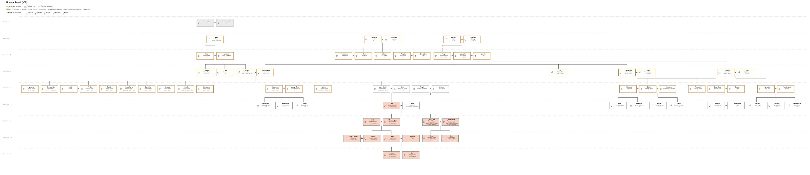
Línia de temps
Anys de `Dates/`. A la columna de la dreta, cada full enllaça a aquella cara del quadern.
| Any | Fet (segons el paper) | Cares |
|---|---|---|
| 1853 | Naixement de Concepció (28-XII; un full: 23), Carrer Major 13 2n | Full 2 · dreta |
| 1858 | Mort d’Inés de part (2-II) | Full 3 |
| 1865 | Primera comunió; mort de Puigllat (22-VII); orfenesa | Full 3–4 |
| 1872 | Coneix Ignacio | Full 4 |
| 1875 | Barcelona, esposalles (9-VI), casament (31-VII), velacions (3-VIII) | Full 5–6 |
| 1876 | Hermosinda (6-VIII); Roma i Pius IX (4-X) | Full 6–7, 13–14 |
| 1877 | 2ª filla (26-VIII; un full: 1878) | Full 6–7 |
| 1881 | Rosita (20-I). Fonts (no el paper): mort de Magí Pontí (22-X) | Full 7 |
| 1883 | Pepita (25-I); mort 1-X (caiguda del balcó) | Full 7 |
| 1884 | Promesa a Lourdes; Vilanova; mort de Magín Pontí al paper (22-X; fonts: 1881) | Full 7–8 |
| 1885 | Paco M.ª (2-VI); velacions a Vilanova; morts d’Hermosinda i de la 2ª | Full 7, 9 |
| 1886 | Conchita (13-VI); còlera a Montserrat; Ignacio demana no parlar-ne més (31 anys) | Full 9–10–11 |
| 1888 | Mort de Paco M.ª / Federico (5 o 6-I) | Full 7 |
| 1889 | Llista: Ignacio fill (6-IV) | Full 7 |
| 1891 | Lourdes (4-IV); mort del 7è (7-V) | Full 7 |
| 1893 | 9ª filla: 5 setmanes | Full 7 |
| 1895 | Montserrat (4-XII) | Full 7 |
| 1897 | Javier (14-V); mort de Lourdes | Full 7 |
| 1898 | Paco M.ª (18-V / registre 9-VI) | Full 7 |
| 1899 | Mort de Javier (18-IV), xarampió | Full 7 |
| 1912 | Primera missa de Fernando Palmés a Tortosa | Full ~15 |
| 1914 | Part de Conchita (filla viva); un fill acaba Filosofia | Full ~15–16 |
| 1916 | Malaltia d’Ignacio; Casa Horcas | Full 15–16 |
| 1917 | Mort d’Ignacio (22-II); enterro 24 | Full 16–17 |
| 1918 | Mort de Cecilio (22-I); Carmen Gigó | Full ~17–18 |
| 1919 | Quinta (núm. 53) | Full 18–19 |
| 1921 | Boda de Montserrat (9-V); Melilla / Annual; venda Fernando 45 | Full 18–19–20–21 |
| 1923 | Néta (5-II); malaltia d’abril; Bellvís (16-VIII) | Full 22–23–24 |
| 1924 | Firma, Lleida, 4-III | Full 25 · esquerra |
El còlera d’Espanya se situa històricament el 1885; ella el data amb els naixements de 1886. Es deixa el doble.
Línia de temps
Anys de `Dates/`. A la columna de la dreta, cada full enllaça a aquella cara del quadern.
| Any | Fet (segons el paper) | Cares |
|---|---|---|
| 1853 | Naixement de Concepció (28-XII; un full: 23), Carrer Major 13 2n | Full 2 · dreta |
| 1858 | Mort d’Inés de part (2-II) | Full 3 |
| 1865 | Primera comunió; mort de Puigllat (22-VII); orfenesa | Full 3–4 |
| 1872 | Coneix Ignacio | Full 4 |
| 1875 | Barcelona, esposalles (9-VI), casament (31-VII), velacions (3-VIII) | Full 5–6 |
| 1876 | Hermosinda (6-VIII); Roma i Pius IX (4-X) | Full 6–7, 13–14 |
| 1877 | 2ª filla (26-VIII; un full: 1878) | Full 6–7 |
| 1881 | Rosita (20-I). Fonts (no el paper): mort de Magí Pontí (22-X) | Full 7 |
| 1883 | Pepita (25-I); mort 1-X (caiguda del balcó) | Full 7 |
| 1884 | Promesa a Lourdes; Vilanova; mort de Magín Pontí al paper (22-X; fonts: 1881) | Full 7–8 |
| 1885 | Paco M.ª (2-VI); velacions a Vilanova; morts d’Hermosinda i de la 2ª | Full 7, 9 |
| 1886 | Conchita (13-VI); còlera a Montserrat; Ignacio demana no parlar-ne més (31 anys) | Full 9–10–11 |
| 1888 | Mort de Paco M.ª / Federico (5 o 6-I) | Full 7 |
| 1889 | Llista: Ignacio fill (6-IV) | Full 7 |
| 1891 | Lourdes (4-IV); mort del 7è (7-V) | Full 7 |
| 1893 | 9ª filla: 5 setmanes | Full 7 |
| 1895 | Montserrat (4-XII) | Full 7 |
| 1897 | Javier (14-V); mort de Lourdes | Full 7 |
| 1898 | Paco M.ª (18-V / registre 9-VI) | Full 7 |
| 1899 | Mort de Javier (18-IV), xarampió | Full 7 |
| 1912 | Primera missa de Fernando Palmés a Tortosa | Full ~15 |
| 1914 | Part de Conchita (filla viva); un fill acaba Filosofia | Full ~15–16 |
| 1916 | Malaltia d’Ignacio; Casa Horcas | Full 15–16 |
| 1917 | Mort d’Ignacio (22-II); enterro 24 | Full 16–17 |
| 1918 | Mort de Cecilio (22-I); Carmen Gigó | Full ~17–18 |
| 1919 | Quinta (núm. 53) | Full 18–19 |
| 1921 | Boda de Montserrat (9-V); Melilla / Annual; venda Fernando 45 | Full 18–19–20–21 |
| 1923 | Néta (5-II); malaltia d’abril; Bellvís (16-VIII) | Full 22–23–24 |
| 1924 | Firma, Lleida, 4-III | Full 25 · esquerra |
El còlera d’Espanya se situa històricament el 1885; ella el data amb els naixements de 1886. Es deixa el doble.
Línia de temps
Anys de `Dates/`. A la columna de la dreta, cada full enllaça a aquella cara del quadern.
| Any | Fet (segons el paper) | Cares |
|---|---|---|
| 1853 | Naixement de Concepció (28-XII; un full: 23), Carrer Major 13 2n | Full 2 · dreta |
| 1858 | Mort d’Inés de part (2-II) | Full 3 |
| 1865 | Primera comunió; mort de Puigllat (22-VII); orfenesa | Full 3–4 |
| 1872 | Coneix Ignacio | Full 4 |
| 1875 | Barcelona, esposalles (9-VI), casament (31-VII), velacions (3-VIII) | Full 5–6 |
| 1876 | Hermosinda (6-VIII); Roma i Pius IX (4-X) | Full 6–7, 13–14 |
| 1877 | 2ª filla (26-VIII; un full: 1878) | Full 6–7 |
| 1881 | Rosita (20-I). Fonts (no el paper): mort de Magí Pontí (22-X) | Full 7 |
| 1883 | Pepita (25-I); mort 1-X (caiguda del balcó) | Full 7 |
| 1884 | Promesa a Lourdes; Vilanova; mort de Magín Pontí al paper (22-X; fonts: 1881) | Full 7–8 |
| 1885 | Paco M.ª (2-VI); velacions a Vilanova; morts d’Hermosinda i de la 2ª | Full 7, 9 |
| 1886 | Conchita (13-VI); còlera a Montserrat; Ignacio demana no parlar-ne més (31 anys) | Full 9–10–11 |
| 1888 | Mort de Paco M.ª / Federico (5 o 6-I) | Full 7 |
| 1889 | Llista: Ignacio fill (6-IV) | Full 7 |
| 1891 | Lourdes (4-IV); mort del 7è (7-V) | Full 7 |
| 1893 | 9ª filla: 5 setmanes | Full 7 |
| 1895 | Montserrat (4-XII) | Full 7 |
| 1897 | Javier (14-V); mort de Lourdes | Full 7 |
| 1898 | Paco M.ª (18-V / registre 9-VI) | Full 7 |
| 1899 | Mort de Javier (18-IV), xarampió | Full 7 |
| 1912 | Primera missa de Fernando Palmés a Tortosa | Full ~15 |
| 1914 | Part de Conchita (filla viva); un fill acaba Filosofia | Full ~15–16 |
| 1916 | Malaltia d’Ignacio; Casa Horcas | Full 15–16 |
| 1917 | Mort d’Ignacio (22-II); enterro 24 | Full 16–17 |
| 1918 | Mort de Cecilio (22-I); Carmen Gigó | Full ~17–18 |
| 1919 | Quinta (núm. 53) | Full 18–19 |
| 1921 | Boda de Montserrat (9-V); Melilla / Annual; venda Fernando 45 | Full 18–19–20–21 |
| 1923 | Néta (5-II); malaltia d’abril; Bellvís (16-VIII) | Full 22–23–24 |
| 1924 | Firma, Lleida, 4-III | Full 25 · esquerra |
El còlera d’Espanya se situa històricament el 1885; ella el data amb els naixements de 1886. Es deixa el doble.
Línia de temps
Anys de `Dates/`. A la columna de la dreta, cada full enllaça a aquella cara del quadern.
| Any | Fet (segons el paper) | Cares |
|---|---|---|
| 1853 | Naixement de Concepció (28-XII; un full: 23), Carrer Major 13 2n | Full 2 · dreta |
| 1858 | Mort d’Inés de part (2-II) | Full 3 |
| 1865 | Primera comunió; mort de Puigllat (22-VII); orfenesa | Full 3–4 |
| 1872 | Coneix Ignacio | Full 4 |
| 1875 | Barcelona, esposalles (9-VI), casament (31-VII), velacions (3-VIII) | Full 5–6 |
| 1876 | Hermosinda (6-VIII); Roma i Pius IX (4-X) | Full 6–7, 13–14 |
| 1877 | 2ª filla (26-VIII; un full: 1878) | Full 6–7 |
| 1881 | Rosita (20-I). Fonts (no el paper): mort de Magí Pontí (22-X) | Full 7 |
| 1883 | Pepita (25-I); mort 1-X (caiguda del balcó) | Full 7 |
| 1884 | Promesa a Lourdes; Vilanova; mort de Magín Pontí al paper (22-X; fonts: 1881) | Full 7–8 |
| 1885 | Paco M.ª (2-VI); velacions a Vilanova; morts d’Hermosinda i de la 2ª | Full 7, 9 |
| 1886 | Conchita (13-VI); còlera a Montserrat; Ignacio demana no parlar-ne més (31 anys) | Full 9–10–11 |
| 1888 | Mort de Paco M.ª / Federico (5 o 6-I) | Full 7 |
| 1889 | Llista: Ignacio fill (6-IV) | Full 7 |
| 1891 | Lourdes (4-IV); mort del 7è (7-V) | Full 7 |
| 1893 | 9ª filla: 5 setmanes | Full 7 |
| 1895 | Montserrat (4-XII) | Full 7 |
| 1897 | Javier (14-V); mort de Lourdes | Full 7 |
| 1898 | Paco M.ª (18-V / registre 9-VI) | Full 7 |
| 1899 | Mort de Javier (18-IV), xarampió | Full 7 |
| 1912 | Primera missa de Fernando Palmés a Tortosa | Full ~15 |
| 1914 | Part de Conchita (filla viva); un fill acaba Filosofia | Full ~15–16 |
| 1916 | Malaltia d’Ignacio; Casa Horcas | Full 15–16 |
| 1917 | Mort d’Ignacio (22-II); enterro 24 | Full 16–17 |
| 1918 | Mort de Cecilio (22-I); Carmen Gigó | Full ~17–18 |
| 1919 | Quinta (núm. 53) | Full 18–19 |
| 1921 | Boda de Montserrat (9-V); Melilla / Annual; venda Fernando 45 | Full 18–19–20–21 |
| 1923 | Néta (5-II); malaltia d’abril; Bellvís (16-VIII) | Full 22–23–24 |
| 1924 | Firma, Lleida, 4-III | Full 25 · esquerra |
El còlera d’Espanya se situa històricament el 1885; ella el data amb els naixements de 1886. Es deixa el doble.
Notes de lectura
Notes que es repetiran al peu de les cares. Font: el quadern, no el 01.
Noms
- Ponti / Pontí / Puntí. Al paper: Ponti i Pontí. L’arbre: Ponti. El llibre no unifica a Puntí. Magín és Pontí (Magí Pontí i Ferrer).
- Pardi era Pontí. Estevan i Dr. Moises: al paper Pontí. Lectura antiga Pardi. El Sr. Pardo del pis (querella) és un altre nom: no es toca.
- Palmés, no Palma. Cognom de Lleida. Padrins Fernando i Carlos; nebot jesuïta Fernando Palmés Valls. Lectures antigues Palma / Palmé.
- P. Ferrer, no Febrer. Sagraments a Montserrat. El mes de febrer no es toca.
- Gigó, no Gigo. Amiga Carmen Gigó.
- Recasens, no Recesens. Prevere P. Recasens (1923).
- Mort de Magí: paper 22-X-1884; fonts 22-X-1881. El fidel conserva el 1884.
- Sanpere / Sampere. Sogre: Simón y Sanpere al quadern; Sampere a l’arbre.
- Dues Conchites. La 6ª (Conchita (1886), còlera) no és Conchita (filla viva) (1914).
- Dos Paco María. 1885 (mort 1888; un lloc Federico) i 1898 (quinta / Melilla).
- Monserrat. Grafia del paper per Montserrat (1895).
- Janer, no Sanuy. El quadern casa Montserrat amb Janer (1921). L’arbre (v59) la casa amb Sanuy Ramonich. Al llibre: Janer, amb nota.
- Mare Inés. El paper: Inés d’Almenar. L’arbre: Joaquina Gil Lacuña. Al llibre: Inés.
Llocs
- Carrer Major. En català (marc, resum, mapa). Al paper: Calle Mayor. No es «catalanitza» el fidel ni la corregida.
- Vilanova del Segrià (casa, velacions) no és el P. Casimiro Villanueva (paül). El manuscrit vacil·la Vilanova / Villanueva per al poble: fidel respecta; corregida anota.
El silenci del còlera
- Quan: el dia de tornar de Montserrat a casa (després del 18 de setembre; el paper data el còlera 1885/86).
- Qui el demana: Ignacio, no un prevere. Paraules seves: els dos fills al cel; que no parli més de les desgràcies.
- Per què, al paper: ella busca el fill convalescent; la casa calla; el metge s’amaga de por al cop. No hi ha un vot ni una prohibició d’església escrita.
- Quant: ella no n’hi parla mai; a la mort d’ell, 31 anys. Plora sola.
Nombres i dates
- 12 fills enumerats, 16 naixements a casa Klein (els dos primers a casa Ruiz). No s’inventen els quatre que falten.
- Naixement de Concepció: 28-XII-1853 vs un full 23. L’arbre: 1856. Mana el 28-XII-1853, amb nota del 23.
- Edat al casament: ella anota 19 anys el 1875 (nascuda 1853 seria 21). Ell: 23 al casament i ~25 el 1872. L’arbre el fa del 1845 (tindria ~30 el 1875).
- Còlera: relat 1886 / epidemiologia 1885. Fill Ignacio del còlera vs Ignacio de la llista (1889–1891): dues històries al paper.
- Mort de Concepció: no és al quadern (firma viva el 1924). L’arbre diu 1934; no s’afirma al llibre fins a tenir document.
To
No es «corregeix» la mare. Es llegeix, s’anota el dubte, es passa pàgina.
Notes de lectura
Notes que es repetiran al peu de les cares. Font: el quadern, no el 01.
Noms
- Ponti / Pontí / Puntí. Al paper: Ponti i Pontí. L’arbre: Ponti. El llibre no unifica a Puntí. Magín és Pontí (Magí Pontí i Ferrer).
- Pardi era Pontí. Estevan i Dr. Moises: al paper Pontí. Lectura antiga Pardi. El Sr. Pardo del pis (querella) és un altre nom: no es toca.
- Palmés, no Palma. Cognom de Lleida. Padrins Fernando i Carlos; nebot jesuïta Fernando Palmés Valls. Lectures antigues Palma / Palmé.
- P. Ferrer, no Febrer. Sagraments a Montserrat. El mes de febrer no es toca.
- Gigó, no Gigo. Amiga Carmen Gigó.
- Recasens, no Recesens. Prevere P. Recasens (1923).
- Mort de Magí: paper 22-X-1884; fonts 22-X-1881. El fidel conserva el 1884.
- Sanpere / Sampere. Sogre: Simón y Sanpere al quadern; Sampere a l’arbre.
- Dues Conchites. La 6ª (Conchita (1886), còlera) no és Conchita (filla viva) (1914).
- Dos Paco María. 1885 (mort 1888; un lloc Federico) i 1898 (quinta / Melilla).
- Monserrat. Grafia del paper per Montserrat (1895).
- Janer, no Sanuy. El quadern casa Montserrat amb Janer (1921). L’arbre (v59) la casa amb Sanuy Ramonich. Al llibre: Janer, amb nota.
- Mare Inés. El paper: Inés d’Almenar. L’arbre: Joaquina Gil Lacuña. Al llibre: Inés.
Llocs
- Carrer Major. En català (marc, resum, mapa). Al paper: Calle Mayor. No es «catalanitza» el fidel ni la corregida.
- Vilanova del Segrià (casa, velacions) no és el P. Casimiro Villanueva (paül). El manuscrit vacil·la Vilanova / Villanueva per al poble: fidel respecta; corregida anota.
El silenci del còlera
- Quan: el dia de tornar de Montserrat a casa (després del 18 de setembre; el paper data el còlera 1885/86).
- Qui el demana: Ignacio, no un prevere. Paraules seves: els dos fills al cel; que no parli més de les desgràcies.
- Per què, al paper: ella busca el fill convalescent; la casa calla; el metge s’amaga de por al cop. No hi ha un vot ni una prohibició d’església escrita.
- Quant: ella no n’hi parla mai; a la mort d’ell, 31 anys. Plora sola.
Nombres i dates
- 12 fills enumerats, 16 naixements a casa Klein (els dos primers a casa Ruiz). No s’inventen els quatre que falten.
- Naixement de Concepció: 28-XII-1853 vs un full 23. L’arbre: 1856. Mana el 28-XII-1853, amb nota del 23.
- Edat al casament: ella anota 19 anys el 1875 (nascuda 1853 seria 21). Ell: 23 al casament i ~25 el 1872. L’arbre el fa del 1845 (tindria ~30 el 1875).
- Còlera: relat 1886 / epidemiologia 1885. Fill Ignacio del còlera vs Ignacio de la llista (1889–1891): dues històries al paper.
- Mort de Concepció: no és al quadern (firma viva el 1924). L’arbre diu 1934; no s’afirma al llibre fins a tenir document.
To
No es «corregeix» la mare. Es llegeix, s’anota el dubte, es passa pàgina.
Notes de lectura
Notes que es repetiran al peu de les cares. Font: el quadern, no el 01.
Noms
- Ponti / Pontí / Puntí. Al paper: Ponti i Pontí. L’arbre: Ponti. El llibre no unifica a Puntí. Magín és Pontí (Magí Pontí i Ferrer).
- Pardi era Pontí. Estevan i Dr. Moises: al paper Pontí. Lectura antiga Pardi. El Sr. Pardo del pis (querella) és un altre nom: no es toca.
- Palmés, no Palma. Cognom de Lleida. Padrins Fernando i Carlos; nebot jesuïta Fernando Palmés Valls. Lectures antigues Palma / Palmé.
- P. Ferrer, no Febrer. Sagraments a Montserrat. El mes de febrer no es toca.
- Gigó, no Gigo. Amiga Carmen Gigó.
- Recasens, no Recesens. Prevere P. Recasens (1923).
- Mort de Magí: paper 22-X-1884; fonts 22-X-1881. El fidel conserva el 1884.
- Sanpere / Sampere. Sogre: Simón y Sanpere al quadern; Sampere a l’arbre.
- Dues Conchites. La 6ª (Conchita (1886), còlera) no és Conchita (filla viva) (1914).
- Dos Paco María. 1885 (mort 1888; un lloc Federico) i 1898 (quinta / Melilla).
- Monserrat. Grafia del paper per Montserrat (1895).
- Janer, no Sanuy. El quadern casa Montserrat amb Janer (1921). L’arbre (v59) la casa amb Sanuy Ramonich. Al llibre: Janer, amb nota.
- Mare Inés. El paper: Inés d’Almenar. L’arbre: Joaquina Gil Lacuña. Al llibre: Inés.
Llocs
- Carrer Major. En català (marc, resum, mapa). Al paper: Calle Mayor. No es «catalanitza» el fidel ni la corregida.
- Vilanova del Segrià (casa, velacions) no és el P. Casimiro Villanueva (paül). El manuscrit vacil·la Vilanova / Villanueva per al poble: fidel respecta; corregida anota.
El silenci del còlera
- Quan: el dia de tornar de Montserrat a casa (després del 18 de setembre; el paper data el còlera 1885/86).
- Qui el demana: Ignacio, no un prevere. Paraules seves: els dos fills al cel; que no parli més de les desgràcies.
- Per què, al paper: ella busca el fill convalescent; la casa calla; el metge s’amaga de por al cop. No hi ha un vot ni una prohibició d’església escrita.
- Quant: ella no n’hi parla mai; a la mort d’ell, 31 anys. Plora sola.
Nombres i dates
- 12 fills enumerats, 16 naixements a casa Klein (els dos primers a casa Ruiz). No s’inventen els quatre que falten.
- Naixement de Concepció: 28-XII-1853 vs un full 23. L’arbre: 1856. Mana el 28-XII-1853, amb nota del 23.
- Edat al casament: ella anota 19 anys el 1875 (nascuda 1853 seria 21). Ell: 23 al casament i ~25 el 1872. L’arbre el fa del 1845 (tindria ~30 el 1875).
- Còlera: relat 1886 / epidemiologia 1885. Fill Ignacio del còlera vs Ignacio de la llista (1889–1891): dues històries al paper.
- Mort de Concepció: no és al quadern (firma viva el 1924). L’arbre diu 1934; no s’afirma al llibre fins a tenir document.
To
No es «corregeix» la mare. Es llegeix, s’anota el dubte, es passa pàgina.
Notes de lectura
Notes que es repetiran al peu de les cares. Font: el quadern, no el 01.
Noms
- Ponti / Pontí / Puntí. Al paper: Ponti i Pontí. L’arbre: Ponti. El llibre no unifica a Puntí. Magín és Pontí (Magí Pontí i Ferrer).
- Pardi era Pontí. Estevan i Dr. Moises: al paper Pontí. Lectura antiga Pardi. El Sr. Pardo del pis (querella) és un altre nom: no es toca.
- Palmés, no Palma. Cognom de Lleida. Padrins Fernando i Carlos; nebot jesuïta Fernando Palmés Valls. Lectures antigues Palma / Palmé.
- P. Ferrer, no Febrer. Sagraments a Montserrat. El mes de febrer no es toca.
- Gigó, no Gigo. Amiga Carmen Gigó.
- Recasens, no Recesens. Prevere P. Recasens (1923).
- Mort de Magí: paper 22-X-1884; fonts 22-X-1881. El fidel conserva el 1884.
- Sanpere / Sampere. Sogre: Simón y Sanpere al quadern; Sampere a l’arbre.
- Dues Conchites. La 6ª (Conchita (1886), còlera) no és Conchita (filla viva) (1914).
- Dos Paco María. 1885 (mort 1888; un lloc Federico) i 1898 (quinta / Melilla).
- Monserrat. Grafia del paper per Montserrat (1895).
- Janer, no Sanuy. El quadern casa Montserrat amb Janer (1921). L’arbre (v59) la casa amb Sanuy Ramonich. Al llibre: Janer, amb nota.
- Mare Inés. El paper: Inés d’Almenar. L’arbre: Joaquina Gil Lacuña. Al llibre: Inés.
Llocs
- Carrer Major. En català (marc, resum, mapa). Al paper: Calle Mayor. No es «catalanitza» el fidel ni la corregida.
- Vilanova del Segrià (casa, velacions) no és el P. Casimiro Villanueva (paül). El manuscrit vacil·la Vilanova / Villanueva per al poble: fidel respecta; corregida anota.
El silenci del còlera
- Quan: el dia de tornar de Montserrat a casa (després del 18 de setembre; el paper data el còlera 1885/86).
- Qui el demana: Ignacio, no un prevere. Paraules seves: els dos fills al cel; que no parli més de les desgràcies.
- Per què, al paper: ella busca el fill convalescent; la casa calla; el metge s’amaga de por al cop. No hi ha un vot ni una prohibició d’església escrita.
- Quant: ella no n’hi parla mai; a la mort d’ell, 31 anys. Plora sola.
Nombres i dates
- 12 fills enumerats, 16 naixements a casa Klein (els dos primers a casa Ruiz). No s’inventen els quatre que falten.
- Naixement de Concepció: 28-XII-1853 vs un full 23. L’arbre: 1856. Mana el 28-XII-1853, amb nota del 23.
- Edat al casament: ella anota 19 anys el 1875 (nascuda 1853 seria 21). Ell: 23 al casament i ~25 el 1872. L’arbre el fa del 1845 (tindria ~30 el 1875).
- Còlera: relat 1886 / epidemiologia 1885. Fill Ignacio del còlera vs Ignacio de la llista (1889–1891): dues històries al paper.
- Mort de Concepció: no és al quadern (firma viva el 1924). L’arbre diu 1934; no s’afirma al llibre fins a tenir document.
To
No es «corregeix» la mare. Es llegeix, s’anota el dubte, es passa pàgina.
Mapa
Llocs que nomena el quadern. Els punts són el municipi (o el carrer, a Lleida), no la porta de casa. Caldes (banys després de Molins de Rei) no té punt: el paper no diu quina Caldes.
Cliqueu un nom de la llista per centrar el mapa. Sense internet, la llista es queda; el plànol OpenStreetMap cal xarxa.
Mapa
Lugares que nombra el cuaderno. Los puntos son el municipio (o la calle, en Lleida), no la puerta de casa. Caldes (baños después de Molins de Rei) no tiene punto: el papel no dice cuál Caldes.
Pulsad un nombre de la lista para centrar el mapa. Sin internet, la lista se queda; el plano OpenStreetMap necesita red.
Map
Places the notebook names. The points are the municipality (or the street, in Lleida), not the house door. Caldes (baths after Molins de Rei) has no point: the paper does not say which Caldes.
Click a name in the list to centre the map. Offline, the list remains; the OpenStreetMap plan needs a network.
Карта
Места, които тетрадката назовава. Точките са общината (или улицата, в Лерида), не вратата на къщата. Калдес (бани след Молинс де Рей) няма точка: хартията не казва кой Калдес.
Натиснете име от списъка, за да центрирате картата. Без интернет списъкът остава; планът OpenStreetMap иска мрежа.
— Naixement, casament, viduïtat, tancament del quadern (1924).Nacimiento, boda, viudez, cierre del cuaderno (1924).Birth, marriage, widowhood, closing of the notebook (1924).Раждане, брак, вдовство, край на тетрадката (1924).
— Núm. 13, 2n: naixement. Un altre 2n del mateix carrer (Javier).N.º 13, 2.º: nacimiento. Otro 2.º del mismo calle (Javier).No. 13, 2nd floor: birth. Another 2nd floor on the same street (Javier).№ 13, 2 етаж: раждане. Друг 2 етаж на същата улица (Хавиер).
— Papereria Urrea, núm. 14 (tapes del quadern).Papelería Urrea, n.º 14 (tapas del cuaderno).Urrea stationer’s, no. 14 (notebook covers).Книжарница Urrea, № 14 (корици на тетрадката).
— Batejos; orgue de Magí Pontí.Bautizos; órgano de Magí Pontí.Baptisms; Magí Pontí’s organ.Кръщения; органът на Маги Понти.
— Estius, casa, velacions; no és el P. Villanueva.Veranos, casa, velaciones; no es el P. Villanueva.Summers, the house, nuptial blessings; not Fr Villanueva.Лета, къща, венчавки; не е п. Вилянуева.
— Mare Inés, àvia paterna.Madre Inés, abuela paterna.Mother Inés; paternal grandmother.Майка Инес, баба по баща.
— Rosa Bofill y Ferrer, sogra.Rosa Bofill y Ferrer, suegra.Rosa Bofill y Ferrer, mother-in-law.Роса Бофил и Ферер, свекърва.
— Origen d’Ignacio; viatge de nuvis.Origen de Ignacio; viaje de novios.Ignacio’s origin; wedding journey.Произход на Игнасио; сватбено пътуване.
— Germana Concepció; 1921 i 1923.Hermana Concepción; 1921 y 1923.Sister Concepción; 1921 and 1923.Сестра Консепсио; 1921 и 1923.
— Còlera, 1885/86; noces dels fills.Cólera, 1885/86; bodas de los hijos.Cholera, 1885/86; the children’s weddings.Холера, 1885/86; сватби на децата.
— Naixement de Magí; Paüls; metge Alijo.Nacimiento de Magí; paúles; médico Alijo.Magí’s birth; Vincentians; Dr Alijo.Раждане на Маги; паулисти; лекар Алихо.
— Enriqueta; Fernando 45; estudis.Enriqueta; Fernando 45; estudios.Enriqueta; Fernando 45; studies.Енрикета; Фернандо 45; учение.
— Operació del peu (Dr. Soldevila).Operación del pie (Dr. Soldevila).Foot operation (Dr Soldevila).Операция на крака (д-р Солдевила).
— Fill després de Melilla (por a la tisi).Hijo después de Melilla (miedo a la tisis).Son after Melilla (fear of consumption).Син след Мелиля (страх от туберкулоза).
— Ignacio, desembre de 1916.Ignacio, diciembre de 1916.Ignacio, December 1916.Игнасио, декември 1916.
— Primera missa de Fernando Palmés, 1912.Primera misa de Fernando Palmés, 1912.Fernando Palmés’s first mass, 1912.Първа литургия на Фернандо Палмес, 1912.
— Visita amb Palmés (P. Cirera).Visita con Palmés (P. Cirera).Visit with Palmés (Fr Cirera).Посещение с Палмес (п. Сирера).
— Artilleria del fill, 1921; El Pilar.Artillería del hijo, 1921; El Pilar.The son’s artillery, 1921; El Pilar.Артилерия на сина, 1921; Ел Пилар.
— Quinta / Annual, 1921.Quinta / Annual, 1921.Draft / Annual, 1921.Набор / Ануал, 1921.
— Promesa i vot; aigua a la mort d’Ignacio.Promesa y voto; agua en la muerte de Ignacio.Promise and vow; water at Ignacio’s death.Обет; вода при смъртта на Игнасио.
— Peregrinació d’Ignacio, 1876; Pius IX.Peregrinación de Ignacio, 1876; Pío IX.Ignacio’s pilgrimage, 1876; Pius IX.Поклонение на Игнасио, 1876; Пий IX.
A tall de comiat
Ella acaba així: que les filles conservin la fe i l’exemple del pare. Nosaltres no hi afegim cap lliçó nova.
El quadern era per a elles. Un segle després el tornem a obrir perquè la lletra no es perdi i perquè qui vingui darrere sàpiga d’on surt la casa.
Així signa, a Lleida, el 4 de març de 1924:
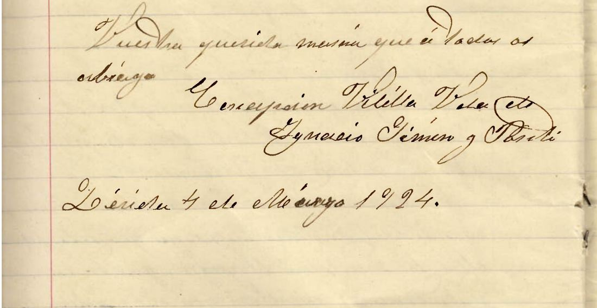
Vuestra querida mamá que á todos os abraza. Concepcion Vilella, vídua d’Ignacio Simón y Ponti. Lérida, 4 de Marzo 1924.
I el títol que ella posa al capdavant del dietari:
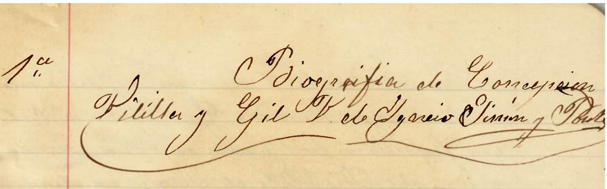
Biografía de Concepcion Vilella y Gil Y de Ignacio Simón y Ponti
A modo de despedida
Ella acaba así: que las hijas conserven la fe y el ejemplo del padre. Nosotros no añadimos ninguna lección nueva.
El cuaderno era para ellas. Un siglo después lo volvemos a abrir para que la letra no se pierda y para que quien venga detrás sepa de dónde sale la casa.
Así firma, en Lleida, el 4 de marzo de 1924:
Vuestra querida mamá que á todos os abraza. Concepcion Vilella, vídua d’Ignacio Simón y Ponti. Lérida, 4 de Marzo 1924.
Y el título que ella pone al frente del dietario:
Biografía de Concepcion Vilella y Gil Y de Ignacio Simón y Ponti
A word of farewell
She ends thus: that the daughters keep the faith and the example of their father. We add no new lesson.
The notebook was for them. A century later we open it again so that the writing is not lost, and so that whoever comes after may know where the house comes from.
So she signs, in Lleida, on 4 March 1924:
Vuestra querida mamá que á todos os abraza. Concepcion Vilella, vídua d’Ignacio Simón y Ponti. Lérida, 4 de Marzo 1924.
And the title she sets at the head of the memoir:
Biografía de Concepcion Vilella y Gil Y de Ignacio Simón y Ponti
Вместо сбогом
Тя завършва така: дъщерите да запазят вярата и примера на бащата. Ние не добавяме нов урок.
Тетрадката е била за тях. Един век по-късно я отваряме отново, за да не се загуби писмото и който дойде отзад да знае откъде излиза къщата.
Така подписва, в Лерида, на 4 март 1924:
Vuestra querida mamá que á todos os abraza. Concepcion Vilella, vídua d’Ignacio Simón y Ponti. Lérida, 4 de Marzo 1924.
И заглавието, което тя поставя в началото на спомена:
Biografía de Concepcion Vilella y Gil Y de Ignacio Simón y Ponti
**Biografía de Concepcion Vilella y Gil Y de Ignacio Simón y Ponti**
Nací el año 1853 en Lérida, el dia 23 de Diciembre; en el piso que ocupábamos mis papás Calle Mayor 13-2º que era entonces vivía mi mamá Dª Francisca Soler Andreu con entonces mi padre; y entonces estaba mi hermana Enriqueta con D. José Puig.
Y vivíamos[?] nos modestísimos en el 2º piso de Juan Cunillé[?] era aquel piso, pero mi papá ya el alquiler del propietario era en aquella época un cajón[?] de 800 Rs el que habitábamos con mi Abuela Dª Pilar Soler y hermana su Concuñada, hasta que casó dicho propietario.
Fueron mis padres D. Jorge Vilella y Dª Ynés[?] natural de Almenar del Segre, lo mismo que su abuela paterna; y mi abuelo D. Manuel Vilella, de la Seira y Dª Francisca Gil y Lemuñiz[?], natural de Lérida; y los abuelos maternos D. Mariano Gil y Dª Francisca Lemuñiz[?] naturales de Puente—
**Biografía de Concepcion Vilella y Gil Y de Ignacio Simón y Ponti**
Nací el año 1853 en Lérida, el dia 28 de Diciembre; en el piso que ocupábamos mis papás Calle Mayor 13-2º, que era donde entonces vivía mi mamá Dª Francisca Soler Andreu con entonces mis padres; y entonces estaba mi hermana Enriqueta con D. José Puig.
Y vivíamos más modestísimos en el 2º piso de Juan Cunillé; era aquel piso, pero mi papá ya el alquiler del propietario era en aquella época un empeño de 800 Rs, el que habitábamos con mi Abuela Dª Pilar Soler y hermana su concuñada, hasta que casó dicho propietario.
Fueron mis padres D. Jorge Vilella y Dª Inés, natural de Almenar del Segre, lo mismo que mi abuela paterna; y mi abuelo D. Manuel Vilella, de la Seira, y Dª Francisca Gil y Lemuñiz, natural de Lérida; y los abuelos maternos D. Mariano Gil y Dª Francisca Lemuñiz, naturales de Puente—
- Lectures dubtoses: `vivíamos`, `Cunillé`, `cajón`, `Ynés`, `Lemuñiz`, `Puente—`.
- **23 de Diciembre:** el segon dígit és un 3, no un 8.
- **Ponti:** cognom del marit; lectura anterior errònia *Vidal*.
Mi querida mamá (q.e.p.d.) falleció al dar á luz á mi hermanito Concepcion[?]; siendo yo de edad 13 meses ya que falleció el dia 2 de Febrero 1858 á las 5 de la mañana, habiendo sido el parto á las 12 menos 25 minutos de la noche. Le velamos el cadáver de nuestra abuela política que había casado con mi abuelo Manuel Vilella en segundas nupcias. Dª Teresa Soler, la que nos hizo de verdadera madre. ya que los dos estábamos con ella. A la edad de 5 años y ½ y mi hermanita 4 y ½ nos pusieron
Mi querida mamá (q.e.p.d.) falleció al dar á luz á mi hermanito; siendo yo de edad de 4 años, ya que falleció el dia 2 de Febrero 1858 á las 5 de la mañana, habiendo sido el parto á las 12 menos 25 minutos de la noche. Le velamos el cadáver de nuestra abuela política, que había casado con mi abuelo Manuel Vilella en segundas nupcias, Dª Teresa Soler, la que nos hizo de verdadera madre, ya que los dos estábamos con ella. A la edad de 5 años y ½ y mi hermanita 4 y ½ nos pusieron
- **(Noviembre):** rúbrica o títol entre parèntesi a l’encapçalament de l’esquerra; també s’ha considerat *(Nacieron)*.
- **consiliario:** mot llarg al final de línia; possible *compañero* / *consocio*.
- **papá y yo:** el mot final, amb gira, també admet *tía*.
- **(q.e.p.d.):** *que en paz descanse*, comprimit entre parèntesis després de *mamá*.
- **Concepcion:** nom de l’«hermanito» nascut al part; grafia com la de l’autora, d’aquí el dubte.
- **13 meses:** així al paper (2 de febrer de 1858); amb el naixement de 1853 l’edat esperable seria uns 4 anys.
- **abuela política:** madrastra de l’avi / esposa en segones núpcies de Manuel Vilella (Teresa Soler).
- **madre. ya que:** minúscula després del punt, com al paper.
- **educandas:** internes; continuació de «nos pusieron».
- **Escolapias:** el tall de línia és `Esco- / lapius`.
- **perdiendose esta:** Teresa Pujol; el gerundi també admet *perdiéndonos*.
- **mal doble prejuicio:** nexe insegur abans de *doble prejuicio*.
- **visita presidencial:** visita del prelat (pastoral) «á la montaña».
- **que era su apellido:** el *que* va interlineat sobre el parèntesi.
- **Ss. sacramentos:** Santos sacramentos.
- **hice la dicha:** així al paper (per *tuve la dicha*).
- **é hicimos de la media pensión:** possibles *y vivimos* / *á libertarnos* de la mitja pensió (externes).
- **compañía de las:** tallat; continua al PDF següent.
Permanecimos 4 años allí internadas a las dos igual, y perdiendose[?] esta para nosotras como una buena maestra que era á más de su buen carácter hacia todas las circunstancias y sobre todo muy cristiana. El año 1865 y el mismo que se fundó la escuela primaria á la que tenia un mal doble prejuicio por intervención de pequeños, fue de dicha visita presidencial, con el Ilustrísimo Sr. Obispo Puigllat (que era su apellido) á la montaña y á los pocos dias le dio un ataque cerebral en Lérida, en donde falleció el dia 22 de Julio despues de recibir los Ss. sacramentos. En lo mismo año en la fiesta de la Purificación hice la dicha de nuestra primera comunión. Recibimos pues las dos hermanitas á la edad de 9 y 8 años respectivamente huerfanitas de padre y madre y solo con el cuidado de nuestra abuela, la que se portó siempre como si fuese nuestra madre. Debimos salir del convento é hicimos[?] de la media pensión; hasta la edad de 17 años, estando en compañía de las
Permanecimos 4 años allí internadas las dos igual, y perdiéndose esta para nosotras como una buena maestra, que era á más de su buen carácter en todas las circunstancias y sobre todo muy cristiana. El año 1865, el mismo que se fundó la escuela primaria, á la que tenía un mal doble prejuicio por intervención de pequeños, fue dicha visita pastoral, con el Ilustrísimo Sr. Obispo Puigllat (que era su apellido) á la montaña, y á los pocos dias le dio un ataque cerebral en Lérida, en donde falleció el dia 22 de Julio despues de recibir los Ss. sacramentos. En lo mismo año, en la fiesta de la Purificación, tuve la dicha de nuestra primera comunión. Recibimos pues las dos hermanitas, á la edad de 9 y 8 años respectivamente, huerfanitas de padre y madre y solo con el cuidado de nuestra abuela, la que se portó siempre como si fuese nuestra madre. Debimos salir del convento y pasamos de la media pensión, hasta la edad de 17 años, estando en compañía de las
- **(Noviembre):** rúbrica o títol entre parèntesi a l’encapçalament de l’esquerra; també s’ha considerat *(Nacieron)*.
- **consiliario:** mot llarg al final de línia; possible *compañero* / *consocio*.
- **papá y yo:** el mot final, amb gira, també admet *tía*.
- **(q.e.p.d.):** *que en paz descanse*, comprimit entre parèntesis després de *mamá*.
- **Concepcion:** nom de l’«hermanito» nascut al part; grafia com la de l’autora, d’aquí el dubte.
- **13 meses:** així al paper (2 de febrer de 1858); amb el naixement de 1853 l’edat esperable seria uns 4 anys.
- **abuela política:** madrastra de l’avi / esposa en segones núpcies de Manuel Vilella (Teresa Soler).
- **madre. ya que:** minúscula després del punt, com al paper.
- **educandas:** internes; continuació de «nos pusieron».
- **Escolapias:** el tall de línia és `Esco- / lapius`.
- **perdiendose esta:** Teresa Pujol; el gerundi també admet *perdiéndonos*.
- **mal doble prejuicio:** nexe insegur abans de *doble prejuicio*.
- **visita presidencial:** visita del prelat (pastoral) «á la montaña».
- **que era su apellido:** el *que* va interlineat sobre el parèntesi.
- **Ss. sacramentos:** Santos sacramentos.
- **hice la dicha:** així al paper (per *tuve la dicha*).
- **é hicimos de la media pensión:** possibles *y vivimos* / *á libertarnos* de la mitja pensió (externes).
- **compañía de las:** tallat; continua al PDF següent.
Siguiente época de mi vida
Teniendo de edad de 11 años, y encontrándonos solas á merced de esto[?] mi querida abuela muy delicada, y habiendo fallecido el Sr. Puigllat, que falleció en Roma á los dos años de mi querido papá (q.e.p.d.) el que á raiz de nuestra desgracia se ofreció para ser nuestro apoyo y consejo, hasta buscarnos y dejarnos colocadas en buenas personas para no estar solas; y el que queríamos como un buen padre y estábamos bajo su dirección. Pensé en mi porvenir.
Siguiente época de mi vida
Teniendo de edad de 11 años, y encontrándonos solas á merced de esta mi querida abuela muy delicada, y habiendo fallecido el Sr. Puigllat, que falleció en Roma á los dos años de mi querido papá (q.e.p.d.), el que á raiz de nuestra desgracia se ofreció para ser nuestro apoyo y consejo, hasta buscarnos y dejarnos colocadas en buenas personas para no estar solas; y el que queríamos como un buen padre y estábamos bajo su dirección. Pensé en mi porvenir.
- **Corsells / Serradoss / Isola:** cognoms i nom de filla llegits amb dubte; *Serradell* / *Serradós* i *Idalia* també s’han considerat.
- **querida papá:** grafia al paper; s’esperaria *querido*.
- **(q.e.p.d.):** *que en paz descanse*; apareix dues vegades després de la mort de Magdalena (1923, 76 anys).
- **Siguiente época de mi vida:** títol centrat, amb adorns abans i després.
- **á merced de esto:** possible *esta* (l’àvia).
- **falleció en Roma:** així al paper (Puigllat); a [[03 fidel|3]] la mort és a Lérida (22 de julio).
- **Pensé en mi porvenir:** inici de frase amb *P* gran; també s’ha considerat *Perdí*.
- **Sin ellos:** continuació possible de la pèrdua del protector / dels pares.
- **indefinido, humildad y sabios:** el *D* inicial d’*indefinido* és molt gran; *sabios* parteix `sa- / bios`.
- **Ignacio Simón y Ponti:** cognom del marit; lectura anterior errònia *Vidal*.
- **desenvolver (servicio militar):** primera carrera entre parèntesis; lectura insegura.
- **sola de visitas:** relació de corteig només de visites.
- **el 57:** xifra entre parèntesis després de *cuando él tenía*; possible *5º* / *5 años*.
- **Pía me Concepción:** tall de línia `Pía / me Concepción`; possible títol *Pía Concepción*.
- **en compañía:** tallat; continua al PDF següent.
Dichas relaciones con el (sola de visitas) cerca 3 años siéndonos tan fieles el uno al otro que como nuestro amor era tan puro y desinteresado pues siempre basado en la religión y bajo el amparo de la Virgen de la que era devotísimo desde su infancia siguiendo el ejemplo de su virtuosa madre la que precedió á nosotros de 9 años (cuando él tenía el 57[?]) y estoy convencida que mucho le intercede á nosotros el llevar ya el santo nombre de la Pía me Concepción. El año 1875 y en compañía
Dichas relaciones con él (solo de visitas) cerca de 3 años, siéndonos tan fieles el uno al otro, que como nuestro amor era tan puro y desinteresado, pues siempre basado en la religión y bajo el amparo de la Virgen, de la que era devotísimo desde su infancia, siguiendo el ejemplo de su virtuosa madre, la que precedió á nosotros de 9 años (cuando él tenía 5 años), y estoy convencida que mucho le intercede á nosotros el llevar ya el santo nombre de la Pía Concepción. El año 1875 y en compañía
- **Corsells / Serradoss / Isola:** cognoms i nom de filla llegits amb dubte; *Serradell* / *Serradós* i *Idalia* també s’han considerat.
- **querida papá:** grafia al paper; s’esperaria *querido*.
- **(q.e.p.d.):** *que en paz descanse*; apareix dues vegades després de la mort de Magdalena (1923, 76 anys).
- **Siguiente época de mi vida:** títol centrat, amb adorns abans i després.
- **á merced de esto:** possible *esta* (l’àvia).
- **falleció en Roma:** així al paper (Puigllat); a [[03 fidel|3]] la mort és a Lérida (22 de julio).
- **Pensé en mi porvenir:** inici de frase amb *P* gran; també s’ha considerat *Perdí*.
- **Sin ellos:** continuació possible de la pèrdua del protector / dels pares.
- **indefinido, humildad y sabios:** el *D* inicial d’*indefinido* és molt gran; *sabios* parteix `sa- / bios`.
- **Ignacio Simón y Ponti:** cognom del marit; lectura anterior errònia *Vidal*.
- **desenvolver (servicio militar):** primera carrera entre parèntesis; lectura insegura.
- **sola de visitas:** relació de corteig només de visites.
- **el 57:** xifra entre parèntesis després de *cuando él tenía*; possible *5º* / *5 años*.
- **Pía me Concepción:** tall de línia `Pía / me Concepción`; possible títol *Pía Concepción*.
- **en compañía:** tallat; continua al PDF següent.
- **hermana Concepción:** així al paper, en la llista de companyia de 1875 (àvia, germana, cosina Inés).
- **ser prudente:** també s’ha considerat *sin perder*.
- **el ser oirlo:** lectura insegura; possible *el ser oído*.
- **(dispuso primo de mi hermano):** parèntesi de l’autora; *dispensa* / *permiso* també s’han considerat.
- **clero corporal:** possible *médico corporal* o *claro corporal*; el mot després de *nuestro* comença per *c*.
- **(y precioso):** així al paper, entre parèntesis després de *apreciado*.
- **de acuerdo:** també s’ha considerat *de Aragon*.
- **entonces pues ya el tiempo:** tall de línia `tem- / po` (o `tem- / blo`); *entonces* insegur.
- **santo de mi papá:** 23 d’abril, Sant Jordi (el pare es deia Jorge).
- **esposo las relaciones / formales:** tall entre fulles; l’esquerra acaba en *relaciones* i la dreta comença *formales*.
- **Vilanova del Segrià:** el manuscrit diu *Villanueva*; és el poble (vacances d’estiu), no un altre topònim.
- **de 6 á 8 noche:** xifres amb traça de *C* i *D*; horari de visites.
- **esponsales muy movidos:** *respectivos* també s’ha considerat; no es van firmar fins a l’agost per malaltia de l’àvia.
- **estimadas tías Nuria:** *esposas tía Nuria* també s’ha considerat.
- **Dª Pasa Puig:** possible *Rosa* / *Paca*; *asistiendo* davant del nom.
- **Martell / Grau:** cognoms llegits així; *Martell* català.
- **Sta. Ana:** 26 de juliol; *Lérida* abreujat amb superíndex en un dels dos casos.
- **padrina:** *enferma* concorda en femení; possible *parienta*.
- **habían alquilado:** també s’ha considerat *adquirido*.
- **su hogar:** última línia a toc del marge dret; continua al PDF següent.
- **hermana Concepción:** així al paper, en la llista de companyia de 1875 (àvia, germana, cosina Inés).
- **ser prudente:** també s’ha considerat *sin perder*.
- **el ser oirlo:** lectura insegura; possible *el ser oído*.
- **(dispuso primo de mi hermano):** parèntesi de l’autora; *dispensa* / *permiso* també s’han considerat.
- **clero corporal:** possible *médico corporal* o *claro corporal*; el mot després de *nuestro* comença per *c*.
- **(y precioso):** així al paper, entre parèntesis després de *apreciado*.
- **de acuerdo:** també s’ha considerat *de Aragon*.
- **entonces pues ya el tiempo:** tall de línia `tem- / po` (o `tem- / blo`); *entonces* insegur.
- **santo de mi papá:** 23 d’abril, Sant Jordi (el pare es deia Jorge).
- **esposo las relaciones / formales:** tall entre fulles; l’esquerra acaba en *relaciones* i la dreta comença *formales*.
- **Vilanova del Segrià:** el manuscrit diu *Villanueva*; és el poble (vacances d’estiu), no un altre topònim.
- **de 6 á 8 noche:** xifres amb traça de *C* i *D*; horari de visites.
- **esponsales muy movidos:** *respectivos* també s’ha considerat; no es van firmar fins a l’agost per malaltia de l’àvia.
- **estimadas tías Nuria:** *esposas tía Nuria* també s’ha considerat.
- **Dª Pasa Puig:** possible *Rosa* / *Paca*; *asistiendo* davant del nom.
- **Martell / Grau:** cognoms llegits així; *Martell* català.
- **Sta. Ana:** 26 de juliol; *Lérida* abreujat amb superíndex en un dels dos casos.
- **padrina:** *enferma* concorda en femení; possible *parienta*.
- **habían alquilado:** també s’ha considerat *adquirido*.
- **su hogar:** última línia a toc del marge dret; continua al PDF següent.
- **que ya nací:** continua *su hogar* de [[05 fidel|5]]; el pis de casa Puig, el mateix on diu que va néixer.
- **Todos dias antes:** uns quants dies abans del casament.
- **delicadeza:** també s’ha considerat *delgadez*.
- **casóse de mi futuro esposo:** així al paper; *casé yo* també s’ha considerat.
- **Sanpere:** tall de línia `San- / pere`; possible *Sampere*.
- **Almacellas:** mot **reescrit** amb tinta densa (possible *Tamarite* / *Almenar* a sota).
- **Se dirigió:** també s’ha considerat *Se verificó*.
- **habiendo asistiendo:** així, sense *asistido*.
- **sintiendo:** tall `sin- / tiendo`.
- **estación santa:** octubre; possible sentit de temporada o visites a llocs de devoció (*Monserrat* així, sense la segona *t*).
- **celebramos:** *celebró* també s’ha considerat.
- **hijos primos:** *un precioso* i el plural no concorden; possibles parents vinguts de Mequinensa.
- **el 1º D. su hijo el cura de Tamar:** possible *el P. D.*; *Tamar* pot ser *Tamarite*.
- **primer hijo / bautizada / Ignacio Macario y Inocencio:** el relat dona noms masculins i *hijo*, però *bautizada* és femení; la relació posa **1ª Hermosinda** el **mateix 6 d’agost de 1876**. Es transcriu el que es veu.
- **Fábregas:** possible *Fábrega*.
- **de los dos años:** possible *novios* / *lados*; lliga el refresco amb la frase següent.
- **Hermosinda:** primera de la relació de fills (amb data de defunció); el llistat continua al PDF següent.
Relación de los hijos nacidos en nuestro feliz matrimonio, y orden y fecha de su fallecimiento
1ª Hermosinda Simón y Vilella; nació en 6 Agosto 1876; falleció en 27 Agosto 1885 á los 9 años
Relación de los hijos nacidos en nuestro feliz matrimonio, y orden y fecha de su fallecimiento
1ª Hermosinda Simón y Vilella; nació en 6 Agosto 1876; falleció en 27 Agosto 1885 á los 9 años
- **que ya nací:** continua *su hogar* de [[05 fidel|5]]; el pis de casa Puig, el mateix on diu que va néixer.
- **Todos dias antes:** uns quants dies abans del casament.
- **delicadeza:** també s’ha considerat *delgadez*.
- **casóse de mi futuro esposo:** així al paper; *casé yo* també s’ha considerat.
- **Sanpere:** tall de línia `San- / pere`; possible *Sampere*.
- **Almacellas:** mot **reescrit** amb tinta densa (possible *Tamarite* / *Almenar* a sota).
- **Se dirigió:** també s’ha considerat *Se verificó*.
- **habiendo asistiendo:** així, sense *asistido*.
- **sintiendo:** tall `sin- / tiendo`.
- **estación santa:** octubre; possible sentit de temporada o visites a llocs de devoció (*Monserrat* així, sense la segona *t*).
- **celebramos:** *celebró* també s’ha considerat.
- **hijos primos:** *un precioso* i el plural no concorden; possibles parents vinguts de Mequinensa.
- **el 1º D. su hijo el cura de Tamar:** possible *el P. D.*; *Tamar* pot ser *Tamarite*.
- **primer hijo / bautizada / Ignacio Macario y Inocencio:** el relat dona noms masculins i *hijo*, però *bautizada* és femení; la relació posa **1ª Hermosinda** el **mateix 6 d’agost de 1876**. Es transcriu el que es veu.
- **Fábregas:** possible *Fábrega*.
- **de los dos años:** possible *novios* / *lados*; lliga el refresco amb la frase següent.
- **Hermosinda:** primera de la relació de fills (amb data de defunció); el llistat continua al PDF següent.
3ª Rosita Ignacia y Sebastiana nació en 20 Enero en 1881
4ª Pepita - en 25 Enero 1883; falleció en 1 Octubre 1883 á los 8 meses
5ª Paco Mª nació en 2 Junio 1885; falleció en 6 Enero 1888 á los 2 años y medio
6ª Conchita nació en 13 Junio 1886
7ª Ignacio nació en 6 Abril 1889, falleció en 7 Mayo 1891 á los 2 años
8ª Maria de Lourdes nació en 4 de Abril 1891, falleció en 21 Abril 1897 á los 6 años
9ª Concepción nació en 9 Noviembre 1893 falleció en 23 Diciembre del mismo año 5 semanas de edad
10ª Monserrat, nació en 4 Diciembre 1895
11ª Javier nació en 14 Mayo 1897, falleció en 18 Abril 1899, á los 2 años
12ª Paco Mª nació en 18 Mayo 1898.
Padrinos
1º D. Magin Pontí y Dª Concepción Vilella
2º D. Magin Pontí y Dª Enriqueta Soler de Puig
3º Dª Ignacia Pontí y D. Magin Pontí
3ª Rosita Ignacia y Sebastiana nació en 20 Enero 1881.
4ª Pepita, en 25 Enero 1883; falleció en 1 Octubre 1883 á los 8 meses.
5ª Paco Mª nació en 2 Junio 1885; falleció en 6 Enero 1888 á los 2 años y medio.
6ª Conchita nació en 13 Junio 1886.
7ª Ignacio nació en 6 Abril 1889, falleció en 7 Mayo 1891 á los 2 años.
8ª Maria de Lourdes nació en 4 de Abril 1891, falleció en 21 Abril 1897 á los 6 años.
9ª Concepción nació en 9 Noviembre 1893, falleció en 23 Diciembre del mismo año, 5 semanas de edad.
10ª Monserrat, nació en 4 Diciembre 1895.
11ª Javier nació en 14 Mayo 1897, falleció en 18 Abril 1899, á los 2 años.
12ª Paco Mª nació en 18 Mayo 1898.
Padrinos
1º D. Magin Pontí y Dª Concepción Vilella
2º D. Magin Pontí y Dª Enriqueta Soler de Puig
3º Dª Ignacia Pontí y D. Magin Pontí
- **2ª … Agosto 1878:** al [[06 fidel|6]] el naixement de la segona filla és *26 Agosto 1877*; aquí la relació posa *Agosto 1878*. Es transcriu el d’aquest full.
- **Pepita / Paco Mª / Conchita / Rosita:** diminutius al paper (*Josefa*, *Francisco María*, *Concepción*, *Rosa*).
- **Monserrat:** així, com al [[06 fidel|6]].
- **Pontí:** tío organista de la catedral de Lleida (**Magín Pontí** / Magí Pontí i Ferrer); lectura anterior errònia *Bondi* / *Bondía*.
- **22 Octubre 1884:** així al paper. Fonts musicals: mort el **22 d’octubre de 1881**.
- **Enriqueta Soler de Puig:** germana casada Puig.
- **Trinidad Soler / Arriaga:** lectures insegures. **Palmés:** cognom de Lleida (no *Palma* / *Palmé*).
- **Los dos fallecieron … 1881:** no quadra amb les defuncions numerades (Hermosinda i la 2ª moren el 1885); es transcriu el que es veu.
- **P. Iglesia Catedral:** possible *Parroquia* o *Sta.*
- **haciendo de piano en un artículo:** possible *de pleno un artículo* (a la casa de Misericòrdia).
- **recabado el sentido:** possible *sin recobrarle el sentido*.
- **Fue trasladado á la:** última línia a toc del marge; continua al PDF següent.
5º Dª Francisca Puig y D. José Puig
6º D. Juan Soler y Dª Rosa Soler de Arriaga[?]
7º Dr.[?] José Simón y Dª Rosita Simón Vilella
8º Dª Ignacia Puig y Dª Rosita I. Vilella
9º Dª Concepción Vilella y Fernando Palmés
10º Conchita Simón V. y Fernando Palmés
11º Dª Dolores Puig y Carlos Palmés
12º D. José Simón y Rosita Simón Vilella
Los dos primeros fueron bautizados y apadrinados por el Dr. Casals y nuestro tío Pontí. Los dos fallecieron el mismo año 1881. Todas fueron bautizadas en la P.[?] Iglesia Catedral y presentadas á la Virgen de los Dolores, en su oratorio en donde nos unimos con nuestro amable esposo (ó pues)[?] en indisoluble lazo.
En 22 Octubre 1884 falleció nuestro querido tío D. Magin Pontí de un ataque apoplético (era el tercero) que le dió estando haciendo de piano[?] en un artículo[?] en la casa de Misericordia; á las 11 de la mañana, falleciendo á las 2 de la tarde; se le habían recabado[?] el sentido á pesar de todos los auxilios corporales y espirituales. Fue trasladado á la
5º Dª Francisca Puig y D. José Puig
6º D. Juan Soler y Dª Rosa Soler de Arriaga
7º Dr. José Simón y Dª Rosita Simón Vilella
8º Dª Ignacia Puig y Dª Rosita I. Vilella
9º Dª Concepción Vilella y Fernando Palmés
10º Conchita Simón V. y Fernando Palmés
11º Dª Dolores Puig y Carlos Palmés
12º D. José Simón y Rosita Simón Vilella
Los dos primeros fueron bautizados y apadrinados por el Dr. Casals y nuestro tío Pontí. Los dos fallecieron el mismo año 1885. Todas fueron bautizadas en la Sta. Iglesia Catedral y presentadas á la Virgen de los Dolores, en su oratorio, en donde nos unimos con nuestro amable esposo en indisoluble lazo.
En 22 Octubre 1884 falleció nuestro querido tío D. Magin Pontí de un ataque apoplético (era el tercero) que le dió estando haciendo de pleno un artículo en la casa de Misericordia; á las 11 de la mañana, falleciendo á las 2 de la tarde; se le había recobrado el sentido á pesar de todos los auxilios corporales y espirituales. Fue trasladado á la
- **2ª … Agosto 1878:** al [[06 fidel|6]] el naixement de la segona filla és *26 Agosto 1877*; aquí la relació posa *Agosto 1878*. Es transcriu el d’aquest full.
- **Pepita / Paco Mª / Conchita / Rosita:** diminutius al paper (*Josefa*, *Francisco María*, *Concepción*, *Rosa*).
- **Monserrat:** així, com al [[06 fidel|6]].
- **Pontí:** tío organista de la catedral de Lleida (**Magín Pontí** / Magí Pontí i Ferrer); lectura anterior errònia *Bondi* / *Bondía*.
- **22 Octubre 1884:** així al paper. Fonts musicals: mort el **22 d’octubre de 1881**.
- **Enriqueta Soler de Puig:** germana casada Puig.
- **Trinidad Soler / Arriaga:** lectures insegures. **Palmés:** cognom de Lleida (no *Palma* / *Palmé*).
- **Los dos fallecieron … 1881:** no quadra amb les defuncions numerades (Hermosinda i la 2ª moren el 1885); es transcriu el que es veu.
- **P. Iglesia Catedral:** possible *Parroquia* o *Sta.*
- **haciendo de piano en un artículo:** possible *de pleno un artículo* (a la casa de Misericòrdia).
- **recabado el sentido:** possible *sin recobrarle el sentido*.
- **Fue trasladado á la:** última línia a toc del marge; continua al PDF següent.
Fue el primer elogio[?] que hicimos en nuestro matrimonio; ya que era persona muy virtuosa y de buenas las cualidades; y por cuyos celos[?] fueron sus hijas, correspondiendo nosotros á su paternal cariño. El mismo dia en que falleció él recibió[?] el golpe[?] á nuestra querida Ignacia, que la quincuagésima[?] Recibió el mismo año los De Inocentes por tener una or de ejemplar. Fue muy sentida por toda Lérida en fallecimiento, ya que ocupó naturalmente el Almacén[?] establecida en esta ciudad desde la edad de 18 años en que su virtud y aficiones, según la plaza de organista de la Sta. Eulalia y mas tarde la montaña[?] el palacio el Mesón[?] Mercé muestra de sus virtudes y alivio nuestro el capilla el teatro el alto Seminario, cuyos cargos desempeñó siempre con nota en virtud y cariño siendo para las niñas exilios[?] un privilegio que si alguna le pagaba la ocurrencia de su práctica particular. El primero de la Congrega desempeñó mas de 40 años estando todo el colegio muy sentida de su talento musical y ejemplar conducta. El 1º de Octubre 1883 falleció nuestra querida hijita Pepita á consecuencia de una caída del balcon
Fue el primer elogio que hicimos en nuestro matrimonio; ya que era persona muy virtuosa y de buenas las cualidades; y por cuyos celos fueron sus hijas, correspondiendo nosotros á su paternal cariño. El mismo dia en que falleció él recibió el golpe á nuestra querida Ignacia. Recibió el mismo año los De Inocentes por tener una hora de ejemplar. Fue muy sentido por toda Lérida su fallecimiento, ya que ocupó naturalmente el organista establecido en esta ciudad desde la edad de 18 años, en que su virtud y aficiones, según la plaza de organista de la Sta. Eulalia y más tarde el palacio, el Mesón, Mercé, muestra de sus virtudes, y alivio nuestro el capilla, el teatro, el alto Seminario, cuyos cargos desempeñó siempre con nota en virtud y cariño, siendo para las niñas asilos un privilegio que si alguna le pagaba la ocurrencia de su práctica particular. El primero de la Congrega desempeñó más de 40 años, estando todo el colegio muy sentido de su talento musical y ejemplar conducta. El 1º de Octubre 1883 falleció nuestra querida hijita Pepita á consecuencia de una caída del balcón
- **Institución del Director D. Magín:** continua *Fue trasladado á la* del [[07 fidel|7]]. Alternative possible: *Derecho / Merced*.
- **elogio / matrimonio:** possible *clérigo … meditando*.
- **él recibió el golpe:** possible *chi tocaba el solfeo*; lectura insegura.
- **quincuagésima / De Inocentes:** festa dels Innocents; el mot del mig és dubtós.
- **Sta. Eulalia / Congrega / Seminario:** càrrecs musicals a Lleida; *exilios* possible *asilos*.
- **Pepita / 1º Octubre 1883 / caída del balcon:** coincideix amb la 4ª filla del [[07 fidel|7]]. Mot partit al llom: *balcon* | *cia en brazos de la niñera*.
- **y en recae[?]:** interlineat sobre *cia en brazos*.
- **Vilanova del Segrià:** el manuscrit diu *Villanueva*; és el poble de Vilanova del Segrià (casa, velacions, cementiri). No confondre amb el *P. Casimiro Villanueva* de [[14 fidel|14]] (cognom de persona).
- **1,000 ₧ / 4,166 ₧:** pessetes de la restauració i de la finca de las Escalaminas[?].
- **niña Pepita (Junio 1884):** al paper, tot i la defunció d’octubre 1883; es transcriu el que es veu.
- **Lourdes / Virgen del Pilar / M. Ange capuchinas:** viatge de 1884.
- **velaciones … 1. de Julio 1885:** després del part de Paco el *2 de Junio* (com al [[07 fidel|7]]).
- **Candelas:** última paraula a toc del marge; continua al PDF següent.
- **Institución del Director D. Magín:** continua *Fue trasladado á la* del [[07 fidel|7]]. Alternative possible: *Derecho / Merced*.
- **elogio / matrimonio:** possible *clérigo … meditando*.
- **él recibió el golpe:** possible *chi tocaba el solfeo*; lectura insegura.
- **quincuagésima / De Inocentes:** festa dels Innocents; el mot del mig és dubtós.
- **Sta. Eulalia / Congrega / Seminario:** càrrecs musicals a Lleida; *exilios* possible *asilos*.
- **Pepita / 1º Octubre 1883 / caída del balcon:** coincideix amb la 4ª filla del [[07 fidel|7]]. Mot partit al llom: *balcon* | *cia en brazos de la niñera*.
- **y en recae[?]:** interlineat sobre *cia en brazos*.
- **Vilanova del Segrià:** el manuscrit diu *Villanueva*; és el poble de Vilanova del Segrià (casa, velacions, cementiri). No confondre amb el *P. Casimiro Villanueva* de [[14 fidel|14]] (cognom de persona).
- **1,000 ₧ / 4,166 ₧:** pessetes de la restauració i de la finca de las Escalaminas[?].
- **niña Pepita (Junio 1884):** al paper, tot i la defunció d’octubre 1883; es transcriu el que es veu.
- **Lourdes / Virgen del Pilar / M. Ange capuchinas:** viatge de 1884.
- **velaciones … 1. de Julio 1885:** després del part de Paco el *2 de Junio* (com al [[07 fidel|7]]).
- **Candelas:** última paraula a toc del marge; continua al PDF següent.
- **Candelas de 5 y Candelas de 2:** continua els fills de la cunyada (*Fernando el 7 años Candelas* al [[08 fidel|8]]).
- **Gran barrio[?]:** possible *Gran duelo*.
- **todas[?] ella:** possible *Dorcas*.
- **cielo ya inundado:** possible *cólera ya inundaba* (el còlera encaixa amb la dreta).
- **Montserrat / 15 Agosto:** festa major del poble; arribada *á las 10 de la noche*.
- **Sta Joaquina[?]:** festa a l’església el dia 16; possible *S. Joaquin*. *Al amanecer del 17 á las 2 y ½* enllaça amb la dreta.
- **Conchita … falleció á las 8 de la noche:** còlera a Montserrat. Al [[07 fidel|7]] la 6ª Conchita (n. 1886) no porta defunció; no s’unifica.
- **Cecilio / Ignacio y Francisquita:** telegrama a Barcelona.
- **cólera fulminante / Ss. Sacramentos / P. Ferrer:** l’autora emmalalteix; metge de Manresa D. Alijo[?].
- **muy bien:** última línia a toc del marge; continua al [[10 fidel|10]].
- **Candelas de 5 y Candelas de 2:** continua els fills de la cunyada (*Fernando el 7 años Candelas* al [[08 fidel|8]]).
- **Gran barrio[?]:** possible *Gran duelo*.
- **todas[?] ella:** possible *Dorcas*.
- **cielo ya inundado:** possible *cólera ya inundaba* (el còlera encaixa amb la dreta).
- **Montserrat / 15 Agosto:** festa major del poble; arribada *á las 10 de la noche*.
- **Sta Joaquina[?]:** festa a l’església el dia 16; possible *S. Joaquin*. *Al amanecer del 17 á las 2 y ½* enllaça amb la dreta.
- **Conchita … falleció á las 8 de la noche:** còlera a Montserrat. Al [[07 fidel|7]] la 6ª Conchita (n. 1886) no porta defunció; no s’unifica.
- **Cecilio / Ignacio y Francisquita:** telegrama a Barcelona.
- **cólera fulminante / Ss. Sacramentos / P. Ferrer:** l’autora emmalalteix; metge de Manresa D. Alijo[?].
- **muy bien:** última línia a toc del marge; continua al [[10 fidel|10]].
- Continua el còlera de Montserrat ([[09 fidel|9]]): convalescència de 8 dies; *H. Joaquinas* i primeres fins al 14 de Setembre (Manresa).
- **Ignacio** (fill) mor de còlera fulminant (4 tarda → 4 matinada) sense haver fet la 1ª comunió; *Pepito de 2 meses* marxa amb Ignacio i Francisquita Ruiz.
- Enterrament: fill al cementeri vell (*Sta[?] Paula*); **Conchita** al cementeri general de Montserrat, nínxol i làpida.
- **dia 21:** també mor *Beatriz* de còlera; *Ss. Sacramentos*; *Dr. Cura Estopany[?]* i *Antonio Labadi[?]*.
- **fue enterrado en el:** última línia a toc del marge; continua al [[11 fidel|11]].
- Continua el còlera de Montserrat ([[09 fidel|9]]): convalescència de 8 dies; *H. Joaquinas* i primeres fins al 14 de Setembre (Manresa).
- **Ignacio** (fill) mor de còlera fulminant (4 tarda → 4 matinada) sense haver fet la 1ª comunió; *Pepito de 2 meses* marxa amb Ignacio i Francisquita Ruiz.
- Enterrament: fill al cementeri vell (*Sta[?] Paula*); **Conchita** al cementeri general de Montserrat, nínxol i làpida.
- **dia 21:** també mor *Beatriz* de còlera; *Ss. Sacramentos*; *Dr. Cura Estopany[?]* i *Antonio Labadi[?]*.
- **fue enterrado en el:** última línia a toc del marge; continua al [[11 fidel|11]].
- Continua l’enterrament (*fue enterrado en el* de [[10 fidel|10]]): *cementerio de Pla[?] 2*; Montserrat fins al **18 de Setembre**.
- Retorn: *Pepe Ruiz* a l’estació; escena a casa (*Candelas*, metge *escondido*); l’espòs: «Hemos esposo mio, que no / dos queridos hijitos estan en el cielo».
- **D.** Barcelona fins al **12 d’Octubre** → Lérida; **Federico** mor el **5 de gener 1888** (2 anys i ½) després de recaure.
- **28 de juliol:** *alumbramiento* de *M. de Goiriz[?]*; **maig 1888** trasllat des de *casa Ruiz*; *casa Klein[?]*: **16 fills**.
- **y los dos primeros en casa:** última línia a toc del marge; continua al [[12 fidel|12]].
D. Permanecimos en Barcelona hasta el dia 12 de Octubre en que regresamos á Lérida las dos familias; despues de tantas tribulaciones. El niño que enfermaba[?] cuando el cólera despues de tener varios dias[?], diarrea[?] y el olor de todo y recayó Federico en pocas horas. Falleció el dia 5 de Enero 1888 a la edad de 2 años y ½. El dia 28 de Julio despues de ser habilitado el alumbramiento de mi hijo M. de Goiriz[?] nos hacemos el primer piso de casa. Nació despues de 12 años que habitábamos en la misma; era el 2º piso el que en Mayo de 1888 nos hicimos traslado desde casa Ruiz. Con motivo de la mudanza[?] los muebles dados[?] á las pocas días del traslado con un incendio[?] desgraciado[?]; mi querido esposo la presencia[?] y él al nacer[?] quiso pedirle perdón. En casa Klein[?] han nacido mis 16 hijos. y los dos primeros en casa
D. Permanecimos en Barcelona hasta el dia 12 de Octubre, en que regresamos á Lérida las dos familias, despues de tantas tribulaciones. El niño que enfermaba cuando el cólera, despues de tener varios dias diarrea y el olor de todo, recayó Federico en pocas horas. Falleció el dia 5 de Enero 1888 á la edad de 2 años y ½. El dia 28 de Julio, despues de ser habilitado el alumbramiento de mi hijo, nos hacemos el primer piso de casa. Nació despues de 12 años que habitábamos en la misma; era el 2º piso, el que en Mayo de 1888 nos hicimos traslado desde casa Ruiz. Con motivo de la mudanza, los muebles dados á los pocos días del traslado con un incendio desgraciado; mi querido esposo la presencia, y él al nacer quiso pedirle perdón. En casa Klein han nacido mis 16 hijos, y los dos primeros en casa
- Continua l’enterrament (*fue enterrado en el* de [[10 fidel|10]]): *cementerio de Pla[?] 2*; Montserrat fins al **18 de Setembre**.
- Retorn: *Pepe Ruiz* a l’estació; escena a casa (*Candelas*, metge *escondido*); l’espòs: «Hemos esposo mio, que no / dos queridos hijitos estan en el cielo».
- **D.** Barcelona fins al **12 d’Octubre** → Lérida; **Federico** mor el **5 de gener 1888** (2 anys i ½) després de recaure.
- **28 de juliol:** *alumbramiento* de *M. de Goiriz[?]*; **maig 1888** trasllat des de *casa Ruiz*; *casa Klein[?]*: **16 fills**.
- **y los dos primeros en casa:** última línia a toc del marge; continua al [[12 fidel|12]].
- Continua *casa Ruiz* ([[11 fidel|11]]). **25 de maig:** obres al *cafe Ruiz*; 2n pis *calle mayor*; **Javier** (2 anys) mor de *sarampion*; **Lourdes** (6 anys) el **9 de febrero**, *casa Klein*.
- Espòs: treball del *despacho*, *tuberculos[?]*; **1º de Mayo** *playa Nº 33, 2º 1º* (9 anys i ½); *Sr. Pardo*; **25 Agosto 1916**; **1919**.
- Dreta: *Visita*; hort i còlera; **30 ₧**; malaltia des del **11 de Diciembre** fins a la **Virgen del Carmen**; *Virgen de la Concepcion*; *Conchita*.
- **pues ella:** última línia a toc del marge; continua al [[13 fidel|13]].
- Continua *casa Ruiz* ([[11 fidel|11]]). **25 de maig:** obres al *cafe Ruiz*; 2n pis *calle mayor*; **Javier** (2 anys) mor de *sarampion*; **Lourdes** (6 anys) el **9 de febrero**, *casa Klein*.
- Espòs: treball del *despacho*, *tuberculos[?]*; **1º de Mayo** *playa Nº 33, 2º 1º* (9 anys i ½); *Sr. Pardo*; **25 Agosto 1916**; **1919**.
- Dreta: *Visita*; hort i còlera; **30 ₧**; malaltia des del **11 de Diciembre** fins a la **Virgen del Carmen**; *Virgen de la Concepcion*; *Conchita*.
- **pues ella:** última línia a toc del marge; continua al [[13 fidel|13]].
- Continua *pues ella* ([[12 fidel|12]]): **3 mesos** al llit; *H. Paules*; *playa*; *anginas*; vot a *Lourdes*; *Señorita Joaquina*, *Paco M.ª* (5 anys); *Loyola*; **8 de Setembre** Lérida.
- Caiguda: peu de l’fill; *Dr. Soldevila*; *Molins de Rey*; **Abril–Agosto**; *Caldas*. **D.** bateig *Isidro[?]*; *Consolación*.
- Dreta: **4 d’Octubre 1876**, any després de l’*enlace*; *peregrinación Nacional á Roma* (**800**); audiència **Pio IX**; retorn **1 de Novembre**; *Montserrat*, *Manresa*; classes a Lérida.
- **beneficio instituto:** última línia a toc del marge; continua al [[14 fidel|14]].
El dia 4 de Octubre de 1876 ó sea el año siguiente á nuestro enlace, marcha mi querido esposo á la peregrinación Nacional á Roma, siendo 800 peregrinos, las mayor parte levíticas[?] y, precauciones, onus[?] duendas[?], procuraron aislarle de los sacerdotes y amigos de mi esposo; el odio de sectarios, haciendole hasta. en que otra gente. Regresaron el 1 de Noviembre muy contento de su viaje y sobrecoges[?]. hubo tenido la incomparable honra de tener una audiencia con el N. Padre Pio IX y besar su mano, siendo por muy bien explicadas todas las molestias y sacrificios: (que no fueron pocas) De regreso á Lérida la Sta Casa el Santo el centenario de Santa y las ciudades[?] de Montserrat y Manresa.
El efecto[?] quedaba tanto mi esposo como yo muy apea-dados en las brujas[?] ocasiones pretendidas por los H. Paules, cuando nuestras obligaciones en Montserrat, pre-damos[?], fundados en Lérida. No se pudo lograr hasta merced[?] algunos años pues habia alguna reserva por parte de la Diputación colegial[?] hoy; pero nuestra constancia en insistir, en dicho asunto venció todas las dificultades y logró ser recogido nuestras clases; instalándole en nuestra Lérida para beneficio instituto
El dia 4 de Octubre de 1876, ó sea el año siguiente á nuestro enlace, marcha mi querido esposo á la peregrinación Nacional á Roma, siendo 800 peregrinos, la mayor parte levitas, y, precauciones, procuraron aislarle de los sacerdotes y amigos de mi esposo, el odio de sectarios, haciéndole hasta. Regresaron el 1 de Noviembre, muy contento de su viaje. Hubo tenido la incomparable honra de tener una audiencia con el N. Padre Pio IX y besar su mano, siendo por muy bien explicadas todas las molestias y sacrificios (que no fueron pocas). De regreso á Lérida, la Sta Casa, el Santo, el centenario, y las ciudades de Montserrat y Manresa.
El efecto quedaba tanto mi esposo como yo muy apegados en las varias ocasiones pretendidas por los H. Paules, cuando nuestras obligaciones en Montserrat, predamos, fundados en Lérida. No se pudo lograr hasta merced algunos años, pues habia alguna reserva por parte de la Diputación colegial hoy; pero nuestra constancia en insistir en dicho asunto venció todas las dificultades y logró ser recogido nuestras clases, instalándole en nuestra Lérida para beneficio instituto
- Continua *pues ella* ([[12 fidel|12]]): **3 mesos** al llit; *H. Paules*; *playa*; *anginas*; vot a *Lourdes*; *Señorita Joaquina*, *Paco M.ª* (5 anys); *Loyola*; **8 de Setembre** Lérida.
- Caiguda: peu de l’fill; *Dr. Soldevila*; *Molins de Rey*; **Abril–Agosto**; *Caldas*. **D.** bateig *Isidro[?]*; *Consolación*.
- Dreta: **4 d’Octubre 1876**, any després de l’*enlace*; *peregrinación Nacional á Roma* (**800**); audiència **Pio IX**; retorn **1 de Novembre**; *Montserrat*, *Manresa*; classes a Lérida.
- **beneficio instituto:** última línia a toc del marge; continua al [[14 fidel|14]].
- Continua *beneficio instituto* ([[13 fidel|13]]): permís dels *Padres recoletos* a Barcelona; *Maestro General*; **Pascua de Resurreccion 1876**, **12 Hermanas**, classes al pis 1r i 2n *Sta. Balbina[?] Nº 8*.
- Trasllat a *calle de las Almacenes* (jardí); *P. Casimiro Villanueva*, *P. Casimiro Cosin[?]* albacea; 12 llits de ferro; inauguració *P. Celsino[?]*.
- Dreta: **16 Hermanas y 2 servidoras**. **St. Blas 1912**, *Tortosa*, primera missa del nebot jesuïta *P. Fernando Palmés Valls*; *Iglesia de Jesus*; **Observatorio del Ebro** (subratllat); *P. Ignacio Foz*, *Tomas*; director *P. Cirera[?]*.
- **1 de Junio** (any següent): *enlace* de *Camilo* amb *Dª Pilar Cos y Soler*; *Virgen de Montserrat*; *padres de Pepito.*
El dia de St. Blas 1912 fuimos todos los infantes, las mis hermanas, y Esposos y Angelita á Tortosa para asistir á la primera misa de mi sobrino el colegiado[?] P. Fernando Palmés Valls el que habia ingresado en la compañia de Jesus en donde le acompañó mi esposo 13 años atrás. Se celebró dicha acto en la Iglesia de Jesus, pueblo con 12 compañeros[?] mas. Todos muy satisfechos y nos obsequiaron mucho. Por la tarde visitamos el Observatorio del Ebro que tienen[?] las Pa á su cargo el que nos enseñó atento todas las explicaciones y perteneciente[?] de su institucion[?] el P. Ignacio Foz y Tomas sobrino de mi esposo; como expedicion que nos dió el P. Cirera[?] director del mismo; regresando tarde el dia siguiente muy satisfechos de dichas fiestas.
Al año siguiente y en 1 de Junio se efectuó el enlace de mi hijo Camilo con Dª Pilar Cos y Soler de Lérida y en el santuario[?] de la Virgen de Montserrat donde nos reunimos[?] toda la familia, las de mis hermanas, padres de Pepito.
El dia de St. Blas 1912 fuimos todos, los infantes, las mis hermanas y esposos y Angelita, á Tortosa para asistir á la primera misa de mi sobrino el colegiado P. Fernando Palmés Valls, el que habia ingresado en la Compañia de Jesus, en donde le acompañó mi esposo 13 años atrás. Se celebró dicho acto en la Iglesia de Jesus, pueblo, con 12 compañeros más. Todos muy satisfechos y nos obsequiaron mucho. Por la tarde visitamos el Observatorio del Ebro, que tienen los PP. á su cargo, el que nos enseñó atento todas las explicaciones y perteneciente de su institución el P. Ignacio Foz y Tomas, sobrino de mi esposo; como expedición que nos dió el P. Cirera, director del mismo; regresando tarde el dia siguiente, muy satisfechos de dichas fiestas.
Al año siguiente y en 1 de Junio se efectuó el enlace de mi hijo Camilo con Dª Pilar Cos y Soler de Lérida, y en el santuario de la Virgen de Montserrat, donde nos reunimos toda la familia, las de mis hermanas, padres de Pepito.
- Continua *beneficio instituto* ([[13 fidel|13]]): permís dels *Padres recoletos* a Barcelona; *Maestro General*; **Pascua de Resurreccion 1876**, **12 Hermanas**, classes al pis 1r i 2n *Sta. Balbina[?] Nº 8*.
- Trasllat a *calle de las Almacenes* (jardí); *P. Casimiro Villanueva*, *P. Casimiro Cosin[?]* albacea; 12 llits de ferro; inauguració *P. Celsino[?]*.
- Dreta: **16 Hermanas y 2 servidoras**. **St. Blas 1912**, *Tortosa*, primera missa del nebot jesuïta *P. Fernando Palmés Valls*; *Iglesia de Jesus*; **Observatorio del Ebro** (subratllat); *P. Ignacio Foz*, *Tomas*; director *P. Cirera[?]*.
- **1 de Junio** (any següent): *enlace* de *Camilo* amb *Dª Pilar Cos y Soler*; *Virgen de Montserrat*; *padres de Pepito.*
primos de mi esposo; estuvimos 3 ó 4 dias; y los novios salieron de viaje á Barcelona Berga Beceales[?] y Tarazona, Bendijo las uniones el P. Federico esposo íntimo de nuestras familias; celebrando el banquete en el restauran de Montserrat. De regres permanecimos 8 dias en el piso de Camilo con la Pepa los que se quedó allí aguardando los novios; estuvo un mes en su compañia. Los novios de regres de viaje nos visitaron muy contentos y nos llevaron á su piso calle de Recole Benedictinas. El dia 28 de Diciembre del año siguiente y despues de preñez. Conchita en su compañia desde Junio enfermó Olvido[?] á consecuencia de echar en silla y problema el parto de la hija (gemelas), cosa muy grave de este estado. Llegué yo con mi hijo á las 12 de dicho dia y hallándola ya sin sentido, se causó[?] de las alegrias[?] necesarias que le debian, me volví á el Dr. del Sto. Corazon, que segun todos los facultativos obra un verdadero milagro ya que llega el periodo agónico; y el dia 1 de Febrero dio á luz un niño muerto á consecuencia de las ahogos. Continuó algunos dias la gravedad; pero q' el Dia 1 de Marzo tuve la satisfaccion de poderla llevar á la Virgen del Sto. Corazon para cumplirle la promesa de este buen
primos de mi esposo; estuvimos 3 ó 4 dias; y los novios salieron de viaje á Barcelona, Berga, Becerril y Tarazona. Bendijo las uniones el P. Federico, esposo íntimo de nuestras familias; celebrando el banquete en el restauran de Montserrat. De regreso permanecimos 8 dias en el piso de Camilo con la Pepa, los que se quedó allí aguardando los novios; estuvo un mes en su compañia. Los novios de regreso de viaje nos visitaron muy contentos y nos llevaron á su piso, calle de Recoletas Benedictinas. El dia 28 de Diciembre del año siguiente y despues de preñez, Conchita en su compañia desde Junio, enfermó de olvido á consecuencia de echar en silla, y problema el parto de la hija (gemelas), cosa muy grave de este estado. Llegué yo con mi hijo á las 12 de dicho dia y hallándola ya sin sentido; se causó de las alegrías necesarias que le debian; me volví al Dr. del Sto. Corazon, que según todos los facultativos obra un verdadero milagro, ya que llega el periodo agónico; y el dia 1 de Febrero dio á luz un niño muerto á consecuencia de los ahogos. Continuó algunos dias la gravedad; pero que el dia 1 de Marzo tuve la satisfaccion de poderla llevar á la Virgen del Sto. Corazon para cumplirle la promesa de este buen
- Continua *padres de Pepito.* ([[14 fidel|14]]): viatge dels nuvis *Barcelona–Berga–Beceales[?]–Tarazona*; banquet a Montserrat; *P. Federico*; 8 dies al pis de *Camilo* amb *Pepa*; pis *calle de Recole Benedictinas*.
- **28 de Diciembre** (any següent): *Conchita*, preñez, *(gemelas)*; **1 de Febrero** fill mort (*ahogos*); **1 de Marzo** *Virgen del Sto. Corazon*.
- Dreta: **28 de Diciembre 1914**, *Filosofia y Letras* (subratllat) a Barcelona; *PP. Mercedarios* fins al febrer. Capçalera *Tercer Relato de mi vida y la muy triste*.
- **Ascension de la Virgen 1916**: congestió ~2 hores; primers símptomes de la malaltia *que le llevó al sepulcro*. *1 de Diciembre*; *Palamós[?]* 10–12 dies; tall *y de rest*.
Cuando estaba mas restablecida vino mi esposo á buscar para regresar á Lérida ya que con dichas pocas palabras yo confirmé[?]; se efectuó. Quedando todos en convalecencia, Publicándose que vinieron las dos. El dia 28 de Diciembre del año 1914 mi hijo hizo[?] la carrera de Filosofia y Letras en Barcelona y por estar mi hijo enfermo lo pusieron con los PP. Mercedarios hasta el mes de Febrero siguiente que se restableció en casa de sus hijos en donde se permaneció toda la convalecencia.
Tercer Relato de mi vida y la muy triste
El dia de la Ascension de la Virgen 1916, despues de ir á misa recibió los PP. Damianistas[?] que mi esposo en huerto y á poco de regreso le dió una congestion que le duró 2 horas, mas o menos minutos[?]; dijo el medico que era una golpe[?] pero que debia evitarse la recaida[?]. Como en pocos dias yo en mi opinion es que este fue los primeros sintomas de la enfermedad que le llevó al sepulcro. Al primero de Diciembre nos hicieron llamar. Dos á Palamós[?] estuvieron unos 10 á 12 dias y de rest
Cuando estaba más restablecida vino mi esposo á buscar para regresar á Lérida, ya que con dichas pocas palabras yo confirmé; se efectuó. Quedando todos en convalecencia, publicándose que vinieron las dos. El dia 28 de Diciembre del año 1914 mi hijo hizo la carrera de Filosofia y Letras en Barcelona, y por estar mi hijo enfermo lo pusieron con los PP. Mercedarios hasta el mes de Febrero siguiente, que se restableció en casa de sus hijos, en donde se permaneció toda la convalecencia.
Tercer Relato de mi vida y la muy triste
El dia de la Ascension de la Virgen 1916, despues de ir á misa, recibió los PP. Damianistas que mi esposo en huerto, y á poco de regreso le dió una congestión que le duró 2 horas, más o menos minutos; dijo el médico que era un golpe, pero que debia evitarse la recaida. Como en pocos dias, yo en mi opinión es que este fue los primeros sintomas de la enfermedad que le llevó al sepulcro. Al primero de Diciembre nos hicieron llamar. Dos á Palamós estuvieron unos 10 á 12 dias y de rest
- Continua *padres de Pepito.* ([[14 fidel|14]]): viatge dels nuvis *Barcelona–Berga–Beceales[?]–Tarazona*; banquet a Montserrat; *P. Federico*; 8 dies al pis de *Camilo* amb *Pepa*; pis *calle de Recole Benedictinas*.
- **28 de Diciembre** (any següent): *Conchita*, preñez, *(gemelas)*; **1 de Febrero** fill mort (*ahogos*); **1 de Marzo** *Virgen del Sto. Corazon*.
- Dreta: **28 de Diciembre 1914**, *Filosofia y Letras* (subratllat) a Barcelona; *PP. Mercedarios* fins al febrer. Capçalera *Tercer Relato de mi vida y la muy triste*.
- **Ascension de la Virgen 1916**: congestió ~2 hores; primers símptomes de la malaltia *que le llevó al sepulcro*. *1 de Diciembre*; *Palamós[?]* 10–12 dies; tall *y de rest*.
- Continua el tall *y de rest* del full 15 dreta: *bleza del resto*.
- *velada de la crisis* i *ataque cerebral* van subratllats al paper.
- Dr. Boixader: íntim amic; oficia la missa del 22; parentètic *falleció 6 meses tres días*.
- Continua *el cual recibió* del full 16 esquerra.
- *goyas[?]* de la Reina de Navarra → goigs (corregida).
- Metges que certifiquen: Floris, Cerca, Trujol, Cosian[?].
- El paper queda tallat: *por ma*.
Me desconsuela que Dios permite que tan solo la sabe Dios ya que su divina cuenta perdí en tan corto tiempo el ser que mas he amado en este mundo no tan solo por su cariño sino por sus virtudes y gracias tanto espirituales como corporales; como el que el mismo á el se semblaba las vocaciones siempre como (mi predilecto espos). Estaba en su santo consorcio 44 años 3 meses y 22 dias menos media hora. Fue Dios El Señor mas el cuerpo lo ofició el padre [?] puesto en la iglesia para toda la feligresia y con mis hijos. Se celebró el entierro y funeral al siguiente, y el Sr. Obispo vino á oficiar el responso y poner las indulgencias. Vino con una infinidad de amigos tanto al entierro que se dijo en casa como el funeral y entierro que fue una verdadera manifestacion de duelo; ya que mi inolvidable esposo era muy querido de todo Lérida y un padre aficionado para los pobres. Se verificó el entierro el dia 24 á las 12 y con toda el ultimo con-
Me desconsuela que Dios permite que tan solo la sabe Dios, ya que su divina cuenta perdí en tan corto tiempo el ser que más he amado en este mundo, no tan solo por su cariño sino por sus virtudes y gracias tanto espirituales como corporales; como el que el mismo á él se semblaba las vocaciones siempre como (mi predilecto esposo). Estaba en su santo consorcio 44 años, 3 meses y 22 dias menos media hora. Fue Dios El Señor; más el cuerpo lo ofició el padre, puesto en la iglesia para toda la feligresía y con mis hijos. Se celebró el entierro y funeral al siguiente, y el Sr. Obispo vino á oficiar el responso y poner las indulgencias. Vino con una infinidad de amigos tanto al entierro que se dijo en casa como el funeral y entierro, que fue una verdadera manifestación de duelo; ya que mi inolvidable esposo era muy querido de todo Lérida y un padre aficionado para los pobres. Se verificó el entierro el dia 24 á las 12 y con todo el último con-
- Continua *por ma* ([[16 fidel|16]]): mort **22 de Febrero 1917**, **11 y 1/4** de la nit; *santo consorcio* **44 años 3 meses y 22 dias menos media hora**; *Sr. Obispo* (responso i indulgències); *manifestacion de duelo*; *Lérida*; enterro **dia 24 á las 12**.
- Dreta: *concierto de honras*; nínxol *D. Estevan Pontí*; **25 á 36 misas**; *Sta. Nocturna*; **506 recordatorios**; *dia 22* mensual; tall *alegría*.
Solo me queda la satisfaccion aun que le debo por el todo lo que pude hacer una verdadera deuda de su persona tan buena y cariñosa; ya que á mas de los sufragios que á raiz[?] de su fallecimiento se celebraran todas las cintas[?] al aniversario de su santa muerte se le han ofreciendo de 25 á 36 misas y unas Vela[?] de la Sta. Nocturna sin contar las mensuales que se celebran el dia 22. Se dirigen 506 recordatorios para las parientes con su retrato y se insertó en los diarios la [?] de su defuncion; lo mismo luego todas las cintas. De [?] de la [?] aquí se celebra despues de su fallecimiento todas las cintas el aniversario como recuerdo de ser su [?]. De los pocos dias de nuestra inseparable alegría
Solo me queda la satisfaccion, aunque le debo por él todo, lo que pude hacer una verdadera deuda de su persona tan buena y cariñosa; ya que á más de los sufragios que á raiz de su fallecimiento se celebrarán todas las cintas al aniversario de su santa muerte, se le han ofreciendo de 25 á 36 misas y unas velas de la Sta. Nocturna, sin contar las mensuales que se celebran el dia 22. Se dirigen 506 recordatorios para los parientes con su retrato, y se insertó en los diarios la esquela de su defunción; lo mismo luego todas las cintas. De aquí se celebra despues de su fallecimiento todas las cintas el aniversario como recuerdo. De los pocos dias de nuestra inseparable alegría
- Continua *por ma* ([[16 fidel|16]]): mort **22 de Febrero 1917**, **11 y 1/4** de la nit; *santo consorcio* **44 años 3 meses y 22 dias menos media hora**; *Sr. Obispo* (responso i indulgències); *manifestacion de duelo*; *Lérida*; enterro **dia 24 á las 12**.
- Dreta: *concierto de honras*; nínxol *D. Estevan Pontí*; **25 á 36 misas**; *Sta. Nocturna*; **506 recordatorios**; *dia 22* mensual; tall *alegría*.
- Continua *alegría* ([[17 fidel|17]]): *hijos Montañés*; *P. Janer*; *Cecilio*; relíquies / misas 6 mesos; adreça **Fernando 45**; boda **9 de Mayo 1921**; *Capilla de la Merced[?]*; *Montserrat y Barcelona*.
- Dreta: *Cecilio* mor **22 de Enero**, **11 meses** després de l’espòs; *Dña Carmen Gigó* **26**; quinta **Febrero 1919** n. **53**; **100 ₧**; **31 de Julio**; **Melilla** / *desastre de Annual*. Tall *Annual*.
En Febrero de 1919 entré[?] mi hijo en quinta durante la alegría[?] de casa el número 53; me efecté[?] muchísimo pues ya preveia las fatales consecuencias que nos presagiaban (que por alegría suceso) fué para soltarlo desde este dia para casa puesto un año de privilegio mi hijo hasta Julio de 1920 que hizo el primer plazo y el año siguiente el 2º ya que era en el de 1º. En hayamos en dos plazos 100 ₧ para reclamarle á mas los trajes y otros gastos. Despues de haberle ocupado[?], dejándole ya libre, el dia 31 de Julio (dia Vera[?] memorable y triste) le llamaron para ingresar á las 2 y con probabilidad de salirle para Melilla á consecuencia del desastre de Annual
En Febrero de 1919 entró mi hijo en quinta durante la alegría de casa, el número 53; me afecté muchísimo, pues ya preveía las fatales consecuencias que nos presagiaban (que por alegría suceso) fue para soltarlo desde este dia para casa, puesto un año de privilegio mi hijo hasta Julio de 1920, que hizo el primer plazo, y el año siguiente el 2º, ya que era en el de 1º. En hayamos en dos plazos 100 ₧ para reclamarle, á más los trajes y otros gastos. Despues de haberle ocupado, dejándole ya libre, el dia 31 de Julio (dia vera memorable y triste) le llamaron para ingresar á las 2, y con probabilidad de salirle para Melilla á consecuencia del desastre de Annual
- Continua *alegría* ([[17 fidel|17]]): *hijos Montañés*; *P. Janer*; *Cecilio*; relíquies / misas 6 mesos; adreça **Fernando 45**; boda **9 de Mayo 1921**; *Capilla de la Merced[?]*; *Montserrat y Barcelona*.
- Dreta: *Cecilio* mor **22 de Enero**, **11 meses** després de l’espòs; *Dña Carmen Gigó* **26**; quinta **Febrero 1919** n. **53**; **100 ₧**; **31 de Julio**; **Melilla** / *desastre de Annual*. Tall *Annual*.
Por nuestra alegria no fue asi sino que á los 2 dias se dio la orden de embarcar para Melilla.
Con grande fatiga esta mala noticia, marchó mi hijo Conchita con Luis[?] de sin tiempo por su aviso pues el tren iba a Mercadal[?]; El ultimo[?] con mi hijo hasta dejarlo en el vagón. No es posible describir mi pesar al quedarme sin mis hijos y con consuelo de no volverlos á ver ya que ambos pensé me sentian estaba muy indispuesto y atento en lo contrario. Lo peor fue el capricho de mi abuelo[?] del
Por nuestra alegría no fue así, sino que á los 2 dias se dio la orden de embarcar para Melilla.
Con grande fatiga esta mala noticia, marchó mi hijo; Conchita con Luis, de sin tiempo por su aviso, pues el tren iba a Mercadal. El último con mi hijo hasta dejarlo en el vagón. No es posible describir mi pesar al quedarme sin mis hijos, y con consuelo de no volverlos á ver, ya que ambos pensé me sentían; estaba muy indispuesto y atento en lo contrario. Lo peor fue el capricho de mi abuelo del
- Continua *Annual* ([[18 fidel|18]]): **1921**; **Bellvis**; germà greu **24 Febrero**; fill a **Zaragoza** / *regimiento de artilleria*; ordre d’embarcar a **Melilla**.
- Dreta: fiança *Corcega[?]*; Melilla fins **16 de Mayo**; inscripció falsa **9 de Junio** vs **18 de Mayo** (subratllat *era la verdadera*); ministeri de guerra / Rei; **2 años**; **416 ₧** d’autos. Tall *sin*.
- Continua *Annual* ([[18 fidel|18]]): **1921**; **Bellvis**; germà greu **24 Febrero**; fill a **Zaragoza** / *regimiento de artilleria*; ordre d’embarcar a **Melilla**.
- Dreta: fiança *Corcega[?]*; Melilla fins **16 de Mayo**; inscripció falsa **9 de Junio** vs **18 de Mayo** (subratllat *era la verdadera*); ministeri de guerra / Rei; **2 años**; **416 ₧** d’autos. Tall *sin*.
- Continua *autos sin* ([[19 fidel|19]]): **14 Octubre 1921**; Sr. **Villarreal**; fill ja a **Melilla**; compra d’un pis **5.000 ₧**; **1.825 ₧** al Sr. Berenguer; **1.850 ₧**; **22 ₧**; **12 Julio 1921**.
- Dreta: venda **Fernando 45** a **D. Domingo Bosch**, **13.000 ₧**, hipoteca **8.000 ₧**; dot **Amelia**; **Montserrat** **14 Octubre 1921** / **1.555**; enllaç **9 Mayo 1921**; **2.066** obres huerto i *Ceballes[?]*; Melilla **6 meses** / **406 ₧** / **1.200 ₧**; tornada **12 Mayo**; part de Montserrat; telegrama. Tall *en el*.
- L24: *hija* intercalat sobre *Montserrat*.
- Continua *autos sin* ([[19 fidel|19]]): **14 Octubre 1921**; Sr. **Villarreal**; fill ja a **Melilla**; compra d’un pis **5.000 ₧**; **1.825 ₧** al Sr. Berenguer; **1.850 ₧**; **22 ₧**; **12 Julio 1921**.
- Dreta: venda **Fernando 45** a **D. Domingo Bosch**, **13.000 ₧**, hipoteca **8.000 ₧**; dot **Amelia**; **Montserrat** **14 Octubre 1921** / **1.555**; enllaç **9 Mayo 1921**; **2.066** obres huerto i *Ceballes[?]*; Melilla **6 meses** / **406 ₧** / **1.200 ₧**; tornada **12 Mayo**; part de Montserrat; telegrama. Tall *en el*.
- L24: *hija* intercalat sobre *Montserrat*.
- Continua el telegrama ([[20 fidel|20]]): *gión[?]*; **Viernes**; **Tortosa**; arribada **12 de Mayo** a les **9** de la nit; **Tibidabo**; **Amelia, Conchita y Cecilia**; **Dr. Vicens**; **Tio Pascual**.
- Dreta: **16 de Mayo** *licencia absoluta* (subratllat al final); salut *desmejorada*; **Barcelona**; **Mataró** **19 de Junio**; *tísis*; platja fins **mediados de Agosto**; **Lérida** vigília de la **Virgen del Carmen**; **Virgen de la Merced**; imatge. Tall *le*.
- Continua el telegrama ([[20 fidel|20]]): *gión[?]*; **Viernes**; **Tortosa**; arribada **12 de Mayo** a les **9** de la nit; **Tibidabo**; **Amelia, Conchita y Cecilia**; **Dr. Vicens**; **Tio Pascual**.
- Dreta: **16 de Mayo** *licencia absoluta* (subratllat al final); salut *desmejorada*; **Barcelona**; **Mataró** **19 de Junio**; *tísis*; platja fins **mediados de Agosto**; **Lérida** vigília de la **Virgen del Carmen**; **Virgen de la Merced**; imatge. Tall *le*.
- Continua [[21 fidel|21]]: *le entregaron* el temps de soldat **2 D.** (subratllat). Nét **5 Febrero 1923**, bateig **12**, **Sn. Juan**, **Pbro Janer**; avis **Joseph Janer** i **Concepcion Vilella**; **Academia Mariana** (Lérida); 3.er aniversari de la mort de l’espòs.
- Dreta: febre *perniciosa[?]*; **Sn José**; **Conchita**; **H. Josefinas**; dolor **renal**; **21** vigília **Virgen de los Dolores**; **Maria Auxiliadora**; **Sto. Corazon de Jesus**; **Amelia** **28 Abril**. Tall *y mi hijo*.
- Continua [[21 fidel|21]]: *le entregaron* el temps de soldat **2 D.** (subratllat). Nét **5 Febrero 1923**, bateig **12**, **Sn. Juan**, **Pbro Janer**; avis **Joseph Janer** i **Concepcion Vilella**; **Academia Mariana** (Lérida); 3.er aniversari de la mort de l’espòs.
- Dreta: febre *perniciosa[?]*; **Sn José**; **Conchita**; **H. Josefinas**; dolor **renal**; **21** vigília **Virgen de los Dolores**; **Maria Auxiliadora**; **Sto. Corazon de Jesus**; **Amelia** **28 Abril**. Tall *y mi hijo*.
- Continua [[22 fidel|22]]: *y mi hijo | el 22*. **12–13 Abril** Extremaunción; tío **Dr. Moises Pontí**; **Casquet y Cintas**; **P. Recasens**.
- Dreta: **4 Mayo** aliment; **24 Mayo** alçar-se; **30 Mayo Maria Auxiliadora**; **reuma**; **20 Diciembre** taula; **Virgen del Carmen** al **P. Hospital**; tall *la sagrada*.
- Continua [[22 fidel|22]]: *y mi hijo | el 22*. **12–13 Abril** Extremaunción; tío **Dr. Moises Pontí**; **Casquet y Cintas**; **P. Recasens**.
- Dreta: **4 Mayo** aliment; **24 Mayo** alçar-se; **30 Mayo Maria Auxiliadora**; **reuma**; **20 Diciembre** taula; **Virgen del Carmen** al **P. Hospital**; tall *la sagrada*.
- **odisea:** 4 anys d’una *odisea muy delicada* (malaltia); no *niña*.
- **mismo dia:** també es podria llegir *de mi santa*; la germana Concepcion mor a Bellvis el 16-VIII-1923, 7 del matí, 66 anys.
- **á este 16 muerto mi hijo:** el fill mor el mateix 16, de *pulmonia* en 24 hores; el dia 8 era a Bellvis.
- **2.565 ₧:** caixa d’estalvis *en mi nombre*, venda de cases *Fernando 45*; primer assentament de Valenti 60 ₧ fins al 25 de juliol.
- **Tressols:** notari de les escriptures de préstec.
- **Concepcion y yo leimos:** el mot pegat *Concehijoleimos*; també podria ser *Conchita y yo leimos*.
De las partes la podré[?] para su devolucion[?] en el término de 5 años; deseando que en caso de fallecer yo antes, no tengan ninguna cuestion ya que se debe cumplir el compromiso como consta en las escrituras de prestamo ante el notario Dª Tressols.
Solo me resta ahora encomendar muy muy mas á mis queridas hijas ya que solo para ellas he escrito mi biografia, que tengan presente todos los sacrificios que sus padres han hecho por ellas y queriéndoles[?] los intereses y sean encomendados en nuestra feliz morada.
De las partes la podré para su devolución en el término de 5 años; deseando que en caso de fallecer yo antes, no tengan ninguna cuestión, ya que se debe cumplir el compromiso como consta en las escrituras de préstamo ante el notario D. Tressols.
Solo me resta ahora encomendar muy muy más á mis queridas hijas, ya que solo para ellas he escrito mi biografía, que tengan presente todos los sacrificios que sus padres han hecho por ellas, y queriéndoles los intereses, y sean encomendados en nuestra feliz morada.
- **odisea:** 4 anys d’una *odisea muy delicada* (malaltia); no *niña*.
- **mismo dia:** també es podria llegir *de mi santa*; la germana Concepcion mor a Bellvis el 16-VIII-1923, 7 del matí, 66 anys.
- **á este 16 muerto mi hijo:** el fill mor el mateix 16, de *pulmonia* en 24 hores; el dia 8 era a Bellvis.
- **2.565 ₧:** caixa d’estalvis *en mi nombre*, venda de cases *Fernando 45*; primer assentament de Valenti 60 ₧ fins al 25 de juliol.
- **Tressols:** notari de les escriptures de préstec.
- **Concepcion y yo leimos:** el mot pegat *Concehijoleimos*; també podria ser *Conchita y yo leimos*.
Vuestra querida mamá que á todos os abraza
Concepcion Vilella Vda de
Ignacio Simón y Ponti
Lérida 4 de Marzo 1924.
Vuestra querida mamá que á todos os abraza
Concepcion Vilella Vda de
Ignacio Simón y Ponti
Lérida 4 de Marzo 1924.
- **nio:** primer mot visible; enllaç amb el final de [[24 fidel|24]].
- **deudos:** també podria llegir-se *defectos* / *deberes*.
- **escrivieseles:** *escribiéndoles* amb grafia de l’autora.
- **Firma:** Concepcion Vilella, vídua d’**Ignacio Simón y Ponti**; Lérida, 4 de març de 1924. Lectura anterior errònia *Janer y Pardi*.